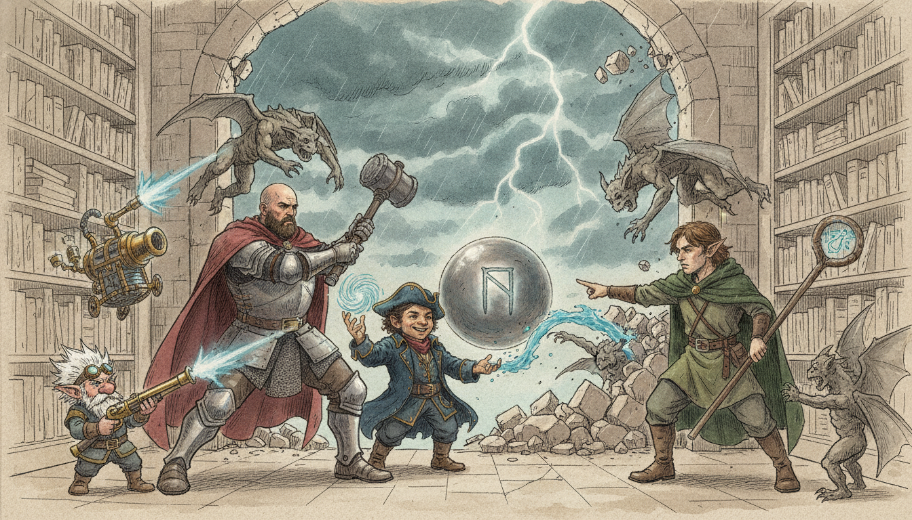
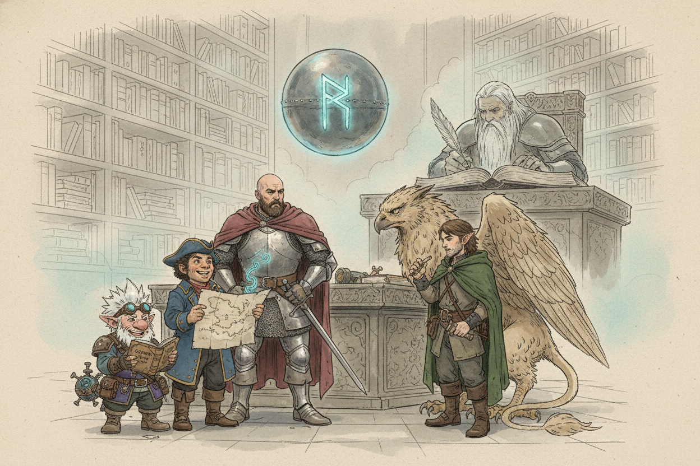
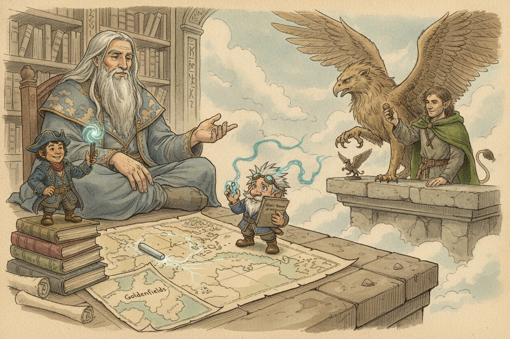
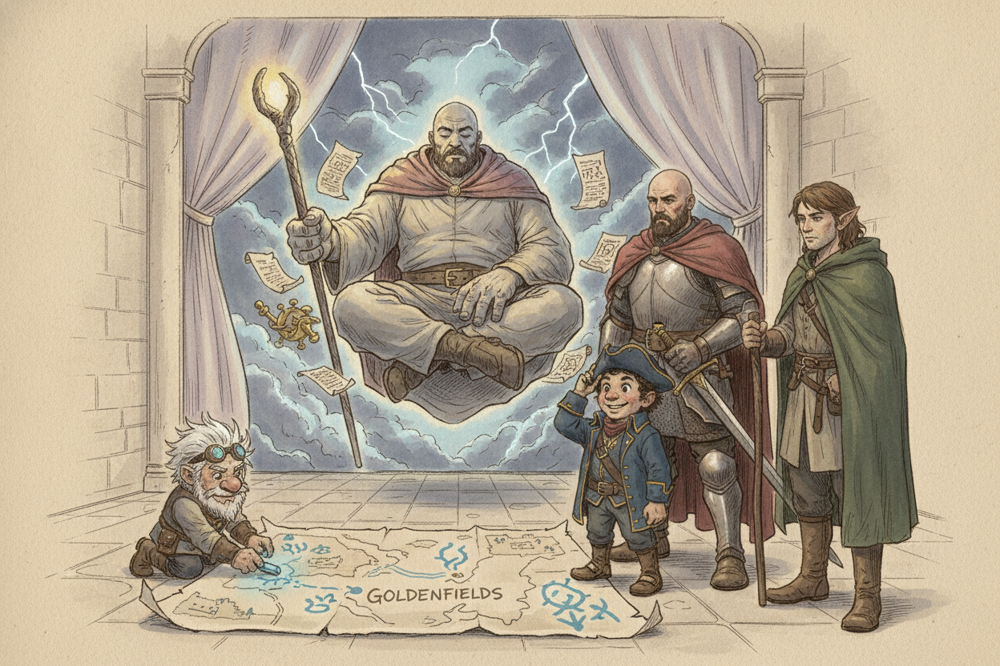
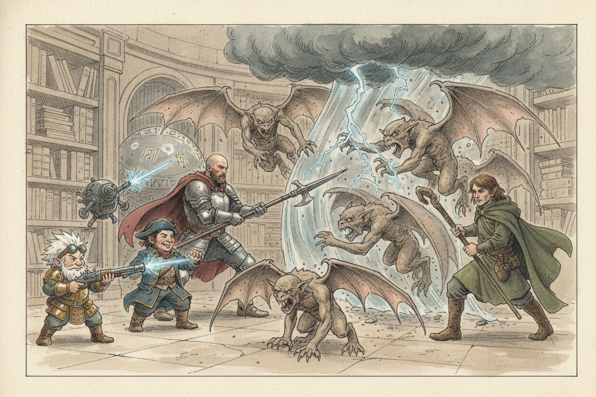

Session 2026-01-27

In brief: Aboard Zephyros's flying tower bound for Goldenfields, the crew rifled through giant-sized bookshelves, won gifts of map, chalk, book, and bronze griffin, then fought off a gargoyle ambush riding in on an unnatural storm.
Three Days in the Cloud Tower

The journey to Goldenfields stretched roughly three days in Zephyros's flying castle, the misty interior of which gave the crew the run of the cloud giant's quarters. Stone shelves protruding from the walls at heights of twenty, forty, and sixty feet groaned under the weight of Zephyros's journals, maps, and curios, and at the center of his study floated a seven-foot sphere of polished metal embossed with a single great giant rune. Their host kept to his writing in giant script, content to let the crew browse so long as they stayed off the second floor, where his griffins were known to tear apart anyone who climbed the stairs uninvited.
Stories Traded for Gifts

While poking among the desk, Fiz noticed a piece of chalk that drifted aimlessly across the giant's maps, drawing lines that faded almost as fast as it scribbled them. Toz coaxed it into the crew's possession by telling Zephyros the tale of the True Hand's wreck, producing the splinter of hull he had carried since Valkyr and asking the giant's blessing to one day return to the sea. Zephyros, moved, gave the chalk freely: laid on a map, it grants advantage on navigation checks tied to wind and weather. He also spread out a player-sized map of Faerûn for Toz to keep, with Goldenfields marked plainly on it.
Fiz, meanwhile, turned up a small volume titled Giant Runes of the Realms by Volotham Gedarm. Zephyros offered to trade it for a story of Halruaa; Fiz refused the bargain but spun the tale anyway, and the giant let him keep the book — ten minutes of study now grants advantage on Arcana checks concerning giant runes. Out on the entry ledge, Woz spent the long hours making friends with one of the griffins, feeding it ogre thumbs and trading a hunter's story until the beast warmed to him. Zephyros, watching, was so pleased by the cleric's oneness with nature that he handed over a small bronze figurine — summons a friendly griffin for a few hours, once every five days.
An Ill Wind Toward Goldenfields

The chalk soon turned ominous of its own accord, scribbling furiously across the route between the tower and Goldenfields and marking a massive storm dead in their path. Zephyros, when shown, frowned: he had checked the weather himself, and no such storm was forecast. He hauled scrolls and instruments down from above and announced he must contact his friends on the other planes — something was wrong in the world, and the storm was only a symptom. He slipped into a deep trance to commune, leaving the crew on watch as the clouds outside darkened and lightning began to flicker along the curtain walls.
Stone Wings at the Curtain

Five gargoyles came in on the wind, bursting through the curtain that screened the tower's open face. The runt led, faces all menace, claws and fangs swinging the moment they landed. The fight turned brutal fast — the constructs preferred to swarm the nearest target, biting and clawing in pairs. Toz called down a roiling storm cloud of his own, a thirty-by-ten patch of lightning that cracked at any gargoyle starting its turn inside. Hal waded in with his halberd, leaning on his fresh second attack now that the party had hit level five. Woz patched the line, disengaging when claws came down too thick. The crew put the swarm down, though not before taking a hard beating against shields and armor.
Zephyros woke with a gasp as the last gargoyle dropped. Told what had come, he shook his head — stone constructs could not have summoned this storm. These, he feared, were only harbingers, scouts for something worse still on its way. He urged a long rest before whatever followed.
What's Next
- Pressing on toward Goldenfields, still inside the unnatural storm, with worse rumored to be following the gargoyles in.
- Zephyros awaiting answers from his contacts on the other planes about the ominous tidings.
- Toz holding the new wind-chalk and the player map of Faerûn; Fiz with his giant-rune primer; Woz with a one-use bronze griffin figurine and a budding rapport with the tower's flock.
- The mystery of the sealed second floor and the runed sphere that steers the castle still unexplored — Zephyros's privacy on both points untested.
Original session notes (Fiz's POV)
Headed to Golden Field in flying castle
Bookshelves on walls
Maps, books
I find a small book, Giant Runes of the Realm, advantage on arcana checks related to giant runes if I spend 10 minutes studying book
Gives Toz map of Faerun
Raw transcript (543 chunks of auto-transcribed audio)
Lightly chunked. Expect overlap with table chatter.
All right, we're standing on the first floor of Zephyros' tower. You can feel the squishy cloud floor underfoot. Zephyros shuffles off to work at his desk where he is suddenly super absorbed in whatever he's writing or working on. So the... Clocked my question real fast. All right, so the floor of the inside of the tower is...
Is cloud? It's cloud. Yeah. Misty. So you guys have like three days in this tower. That's about how long it's going to take to get to Golden Fields.
I liked the audio summary of the podcast. How they're like, oh, you put this big red button in front of the players, they're going to want to go push it. Which one is that? Well, you told us not to go to the second floor. Oh, oh. Watch the recap.
What on the first floor is there in terms of things to interact with? A bar or a casino? So glad you asked. so um i'm not gonna have you make a perception check or anything you'll have time to kind of explore and like feel everything out at least yet the general things you notice um okay so the the room is shaped in a hexagon and corresponding with each wall of the hexagon there is a chain big thick heavy chain hanging from the roof with a glowing flaming orb on it. Each chain seems to be attached to a mechanism on the wall that is like a wench-like mechanism that clearly would lower it or raise it. The entryway has this big blue curtain on it and this curtain you can see whiffs of magical light flowing through the curtain and it's semi-translucent this is we're inside the tower yeah you're inside the tower these are where the leading out of the tower leading out of the tower is this big blue curtain there's bookshelves around, they're giant sized bookshelves and just to give you guys an idea of scale you guys would be like size of children in like an adult size room not like the size of ants like you you can like uh except for the the smaller size players um feel like children in normal size rooms yeah yeah i guess things are a little extra big to you but like the The average-sized player is like, you know, your eye level comes right up to his desk, right?
So you can, like, see on top of the desk and see him writing and stuff. And he's got all sorts of wonders on his desk. And then there's, you know, his giant-sized bookshelves around the room. So he's still on the same level with us? Yeah, yeah. So he's sitting at his desk and, like, apparently just kind of absorbed in his journaling.
All right. And then there's a 20-foot hole in the center of the ceiling. Diameter? 20-foot wide, yeah, so 20-foot diameter. All right, but no way to get up there, right? You could potentially climb the chains, but the lights are currently 20 feet off the ground.
The lights? Yeah, so there's... Yeah, there's orbs and they're like flaming with magical light. You say there's something that we need to lower and raise them? Yeah, so each light is attached to a wench on the wall. And there's like a mechanical crank that can be turned.
But those cranks are ten feet up. Any of you guys talk? Ask him what the orbs are. Oh no, what are these orbs? What are these orbs? with all four of us stacked on top of them.
Three you guys got on my shoulders. Those are, well, they have several properties. If you are to play with them, be very careful. Anything on the first floor is free reign. Go ahead. Go knock yourselves out.
I advise you not to lower them all the way down. I read every book. What about that curtain? Can you tell us anything about that magical-looking curtain? It's cool. Yes, it's a...
It's a curtain. It's a curtain. I have a nice description. Let's use this LED. I scan the shelves for anything written in Halfling or Primordial, like obvious things like that. I don't know.
on the shelves you're finding mainly books written in giant they're seemingly mostly his journals they're not huge and super heavy but you find a book on or not a book but like a case of of scroll containers and we look in them you find that they're maps are any of the maps recognizable of this area um yeah so there's like one big map of fae room a big continental map and then there's just other smaller like local maps is there any that are the area that we're going to, what's the name of this town? Gold something? Golden Fields. Yes, so not like of the area, of the local area, but you can find Golden Fields on the greater map. So we're heading to Waterdeep via Golden Fields, right? My impression is you guys were heading to Golden Fields.
We were trying to give it a conch, right? Yeah. Oh, okay. A conch, sorry. Conch. Conch.
A conch. It's a colonialism. Yeah. So what do these balls do? These glowing orbs? You want me to just tell you, or you want to...
Oh, you said they might be dangerous. Oh, but you asked about the curtain. Yeah. It controls the temperature and the airflow. Go ahead, give it a pull. Okay, I pull the curtain.
When you pull the curtain all the way, you feel a strong updraft that makes you all feel a bit lighter. Almost like you're on the moon or something. It effectively makes you jump much higher when the curtain's all the way up. Can we jump 20 feet straight up? Can we jump to the cranks? You can, mechanically it adds an additional five feet to however high you can jump.
What about? It's like you can jump five feet. Who's the smallest out of all you guys? I think we're about the same, too. Yeah. We're like three to four feet tall.
Do some, do you, would it offend you if I threw my fae friend up to one of the cranks? Whatever your small folk rituals are, I am keen on observing them. I don't. I say that with sarcasm. How high is... I don't even know how high you jump.
So, jump height. I was going to say, I don't know what jump height is on a normal case. So it would be like five feet or something. No, it's dependent on your strength. Here, I've got a... Not very good.
Cheat. You guys want to see what one of these cranks do? I'm going to toss you up there. High jump costs... You leap into the air a number of feet equal to three plus your strength modifier. If you move at least ten feet on foot immediately before the jump.
Is there any like... Oh wait, modifier? Arrow Hallways where you can do a Mario Jump? I have an idea. I just, yes, cast my little birdie and I say, hey birdie. I send my birdie to go.
I turn one of those cranks. How many times can he fall damage? As many as anyone. Wait, really? Yeah. Wait, you just have these expendable birds.
Also, it's like a cloud. It's expendable. It's one bird. Oh, yeah. That's fine. Is this effectively Mage Hand?
It does seem like it's a good one. Yeah, your Mage Hand can turn the crank. Oh, I don't know why. I told us not to. So do we want to keep this in all? What color?
Is there all the same color? No, they're different colors. All the orbs. The orbs. Actually, as it lowers to the ground, well, or raises up. I guess, which do you want to do?
I'll just go to the one to the right. There's six orbs. There's six of them? Yeah, there's six of them. So there's one above the door waker? They're all at equal level right now.
Yeah. Oh, okay. So I'll just-- Equal level 20 feet up in the area? I'll lower the one to the right of the door. And there's 80 feet up past that. So they're hanging 80 feet of chained up.
Wait, how high is the second floor? 100 feet up. Oh, OK. That's a long way. All right, yeah, I lowered the one to the right of the door a foot. The color changes to slightly a more purplish hue, but nothing else really happens.
All right, pull it down a little. Another foot. How far up is it? 30? 20 feet. All right, I take it down to 15 feet.
Take it down to 15 feet. So the orb dims as it comes down, but not only does it dim, but that section of room, all of it gets darker. Like, there's like a barrier of darkness that starts to appear. Like a pipe piece kind of thing? Mm-hmm. I guess that.
I don't know. It's just a dimmer switch. We're just playing these primitive creatures figuring out giant technology. Three days in here. Is there a toilet somewhere? It feels like we leave ourselves in the clouds.
What are we doing? Oh, you can use the cloud for that. So can you send your bird around and lower all of them the same amount? See if that does anything? I could just lower this one all the way and see what happens. Or you could bring it all the way up.
What do you think? I could do that. Maybe bring it down. Yeah, I'll bring that one all the way down. Okay, when it reaches the very bottom and touches the ground, the whole wedge goes completely dark with magical darkness. meaning that if you're in it you can't see out of it you try to light a torch or anything in it it doesn't illuminate it's complete magical darkness there's our latrine boys raise it back up please don't do that where i am working okay okay no problem all right i raise that one try raising it all the way all the way up yeah and now it's blending white um no the light reaches a threshold um and then as it gets up up higher inside that wedge you start to feel yourself get lighter until when it reaches the top uh everything in that wedge starts to float off the ground and anyone inside of it has the effects of the levitation spell okay so levitation like they can arbitrarily go up as high as they want so the way the levitation spell works is you can't like mentally will yourself to go anywhere you're just sort of floating in the air you need to like find something to push yourself off of in order to to go up or down could mage hand pull me up no or they can just if it like sent a rope and you pulled the rope Oh like you pull yourself?
No I just told Andre, because I can mage hand I can just move right? No I think because you're more than five pounds. But I don't weigh anything. That's true. I don't weigh anything but you have mass. I mean so if there's if you're you have the effects of levitation can can I just toss this up?
Can you grab the wall and just shoot me? objects retrieve anything from 30 feet up to 10 pounds it seems like you should doesn't get you able to do that slow you just pull do shit why don't I just push you up throw you up there why not do this then I could change directions well I'll get you started take your own personal magic carpet yeah I do have a No, I don't have that anymore. Should we try some of the other orbs? Yeah, all right. So I lowered that back to where it was and then try another section. You could...
Same thing. Yeah. You could probably leave that. Wait, no. So what's raising and lowering it? A winch.
A little mechanical birdie. Oh, okay. So now two of them are up. I was going to just put that one back where it was. Okay, so you find each one moving independently up or down has a same effect within that wedge. There we go.
Sounds like there might be some interplay between them. Like two or something. Two dimmer switches at the same time? Yeah, I put two up. Oh, he is clever. If I put two up.
Is this fun to watch? Put two up. All the way up? All the way up. In those two sections, the, uh, it's just the same. Mm-hmm.
So there's no interaction between the two. I do not say that. So you got these two all the way up? What if you do all of them? I do. He said don't do all of them.
I put, uh, two side-by-side. Why don't you do this one that he didn't say? Well, he said don't do the one. Which one is he in? I'll say he's, he's in the one opposite the door. He said don't make it dark.
He's there. Because he needs to be able to see what he's. Somebody doesn't want to be floating while he's working. He's not flying. He's just staying put. You know what?
You have my permission. Oh, okay. Put them all up. You put them all up? Yeah. Then the levitation effect happens everywhere.
Hypothesis confirmed. Let's do a checkerboard pattern. Hacks version of a checkerboard. Every other. So when you do that, the uh tower begins to spin and you can feel the like centrifugal force it's like a carny ride push you back oh and you can see outside the like you know the outside spinning sweet so three of them lit up it's spinning so we did three every other one you can just walk spinning yeah we just walk because the gravity is if you're you have a float spell but you're spinning so you're effectively have an artificial gravity sure all right now we just we just walk up to see what's on this what's up on the second he told us not to go yeah oh yeah do not go up that he's watching Hey, put him in the darkness. Don't worry about it.
Put him in the darkness. Also, the griffins up there will probably tear you apart. Oh, OK. They are very hungry for meat all the time. They're inside. Well, they hang out on the second floor and in the airy.
They do not come on the first floor. OK. So there's books, bookshelves. There's these orbs. Maps. Maps.
What are the other maps besides the general area? Any others of interest, even if it's not where we're going? There is a map of Kormir. There is a map of the Anurak Desert. And there's a map of the Spine of the Earth. Are any of these giant domains, dominions?
Do I know this? Can I do a check? someone do a check uh you guys don't know where the giant lords live yeah you know where one of them one of them lives you know that it's somewhere around golden fields but you don't know where it is and zephyros doesn't know either uh are there any other interesting books Yes. Yes. Yes. Yes.
We have a book. Are we looking for something in particular? We're just checking out. There's a tower. Remind me, why are we going to Goldenfields? There was a giant.
To conch. To conch. To travel to the underwater land of giants. Right, okay. because that's where we think the king of all giants is or that's where he was from and we want to go talk to his daughter is that right so um i'm an idiot i forgot how this game works but the whole dnd yeah so um i'm just gonna run with it though uh as you guys expend this day you know you're each kind of on your own exploring the tower um i'm kind of gonna go through each of you and have your own like a little experience couldn't think of a better way to have that happen other than just saying that um sure cool here's a pack of shrooms as we walk up the wall does he like say anything he watches you yeah if we like peek up over the the edge. Is he at all worried about that?
I'm not going all the way up there. Testing boundaries here. Just looking up. Really early. It's my one moon. I'm not going up there.
Just looking. I trust you. I'm a curious sort, you know? I'd like to know how things work, how this castle works. This floating mechanism you have. Um, Fizz, while you're wandering around, you do find a book.
Uh, it's a book sized for a, uh, small folk-sized creature. It's not a giant-sized book. I'm sorry you didn't find the book. It's really bad at finding it. Yeah. Should I roll to find the book?
No, you just find the book. I just found it. Yeah. I think it'd be less fun if you didn't find the book. it's a book of giant runes giant runes? oh giant runes it's titled Giant Runes of the Realms by Volotham Gedarm Zephyros notices you find it and he says willing to let you have a book in exchange for a story of your homeland.
Okay. No deal! No. Alright. So I tell him I'm from Haurua, deep in the south. We are generally an isolationist society.
I don't like to interact with the outside world. Exploring is sort of frowned upon or sharing our technology. There's a lot of artisans and a lot of science and technology is worked on there. That's how I became an artificer. That's what I tell them. I might tell him of, does he want to know about my, where I come from?
He kind of wants to hear, like, life in the shoes of the small folk. He's, like, really just enraptured by everything you're telling him. I tell him I had this aunt who was sort of like me. She was very curious about technology, but also about the rest of the world, and didn't really like following the rules of our society. One day she set off in the middle of the night, sort of said goodbye to me. She knew I was sort of a kindred spirit, told me she was going off to see the world, and then I never saw her again after that.
when I got older I decided I was going to go follow in her footsteps and maybe look for her and just try to learn as much about the world as possible. And did you find her? Not yet, no. Oh, I hope you do. Thank you. Well, thank you.
You may have the book. Oh, thank you. So the book of Giant Runes effectively gives you advantage on arcana checks if you spend 10 minutes studying it, as long as there are kind of checks related to giant runes and giant magic. One time? He needs to just study it for 10 minutes or every time? Every time.
So he's got to spend 10 minutes and then effectively the next check he makes will have advantage. actually so it's sort of like a ritual then yeah effectively You have it all written down there. I sure do. Nice. Cool, that's your thing. All right.
I did it. No cease and desist on note cards, huh? Eno. Oh, hey. While you're sitting outside, which I expected you to do. Which I was doing, yeah.
Okay, cool. exploring inside. One of the griffins soars down and sort of opens its wings and rests on the air. You catch its eye and it approaches you curiously. What do you do? I have animal friendship and it seems or speak with animals I want to talk to it obviously because it's there there's no reason why it's just hanging out there have you ever seen it before?
No, I don't think I have. That's a pretty... It's a pretty intimidating creature. Are they rare? Yes. It's like the size of a horse, but it's got two eagle's talons in the front and an eagle's face and then the rear legs of a lion and the wings of an eagle.
It's mostly eagle. So you can't speak with animals? Yeah, we're gonna do speak with animals so that I can it the normal way that we're friends. RAAA! Hello. RAAA!
Got any meat? I don't know, do I? I know we, uh, potatoes. The tall one who never eats, he gives us meat! Oh, that's cool. I really regret that this is the voice that came out.
Say he never eats. No, no, no. He... Dwight doesn't have a bathroom. You should offer yourself. No.
Sorry, that's the sword speaking. I don't know if I... I could eat you! But the tall one who never eats, he would be mighty mad! Yeah. Let's not do that, then.
So, uh... Whatever I do have, I'll... Tosco. I think we had potatoes, right? I think we have some rations. Oh, wait, I do have...
Well, does ogre thumbs count as mean? Yeah. That's awesome. That's why I grabbed two. You can have one. He gulps up the ogre thumbs.
Oh. Gratefully. Okay. Well, thank you. See you later. Big gulps up.
You have started building a relationship with this griffin. Your relationship is currently at neutral. neutral okay is that higher than it was it's like above animosity right yeah it's like warcraft i gotta grind there's like a comfort there yeah started initiated the process you didn't fail so i need to make sure that i have food on me at all times yep um yeah Hal what's up I'm also walking around rummaging looking for stuff to do you see something that catches your eye okay well like the size of a bat imagine like a d20 the size of a basketball and it reminds you of an old game that you used to play in your soldiering days um and uh zephyros notices you have you picked up this thing and he offers he offers to play with you it's like you want to learn this game Yeah. Yeah, let's do it. Are you a fan of games? I am.
Especially like dice games. I used to poke a lot in the militia past the time with my militia buddies at camp. How about a friendly wager? Sure. Let's do it. You call it.
What are we wagering? What would you like? What have you got to bet? What do I have to bet? I have this cursed sword that's making me racist towards one of my friends. Well, he used to be a friend.
Can I wager that? Or are you more interested in coin? The sword of a small folk. It intrigues me. However, tell me about this curse. well this curse it helps me in battle it makes me a little bit stronger in battle but which is good when you're in battle but when you're not in battle it just makes me a little bit racist I mean sorry the inferior fey people well I'm sorry that's the sword speaking may I hold it Uh, yeah, sure.
So when you try to give it to him, you cannot give it to him. You can't let go of the sword. You can't give it to someone. Ah. Yes! Stupid elves!
I think you need to see a cleric about that curse, my man. Okay. All right. How about this? Mm-hmm. If I win, you must tell me a story of your homeland.
Okay. If you win, you can have the dice. This giant die? Yes. It's 25 pounds. Is there anything special about this die?
Is there any benefit to it? Well, I can tell you that all civilized giants know this game. Okay. Even the ones who are not friendly to small folk. Okay, so it'll help me. It could be like an entryway.
It could help you in the future. Okay, that sounds good. How do we play this game? We're just going to roll a d20. Ah, one of those complex giant games. There's real rules, you know.
You don't have a giant d20? No, I don't. Okay, so... intelligence plus your proficiency since you are proficient in some other gaming tool cards my intelligence plus proficiency proficiency bonus and it'll be uh best of three I'm warning you, I'm very good at this game. I have intelligence minus one. Plus two.
So you have a plus one. Where is your proficiency bonus? Where are you seeing plus two? Your proficiency is plus two. Oh wait, it might be plus three now that you're level five. Where is it on here?
I don't know where it is. Which one? Your proficiency bonus? Isn't it at the top? No, that's initiative. Sorry.
Not here. I need to... skills? Probably not. Oh, wait. No.
Perception. Persuasion. Where is it? Who knows? Well, according to the rules I just said, I don't think it's possible if we'd win. Okay.
Maybe it's a natural 20. Because his proficiency is plus four, and his intelligence is also plus four, plus six. So he's got plus ten. It's still a... So... No?
No. No. Oh, you got a nat 20? Jesus. Okay, so he trounces you at the game. All right.
But you learned the game. I tell you this. Tell me your story. Okay. And I will give you the die anyway. Okay.
So my story, the backstory is I came up in the militia. I was born in a small village and didn't have a lot of skills. And so at my earliest, as soon as I was able to, I joined the militia just to find some camaraderie and some discipline. And so I was in the militia for a while and I made a lot of good friends. And I'm a paladin, so at one point... Oh, just a blast.
What is a paladin? paladin is I'm a fighter kind of like a like a priest fighter and so the thing that brought me to to that was one day we were at camp and I was with a senior general someone I looked up to very much and we were out hunting to find to get some food for the camp and we came across some bandits that were that were attacking a family of travelers and this general my friend he went to save he went to go and protect them and he he distracted the bandits long enough where he got the family could get away but it went in that distraction in the melee before I could get there he the the bandits had like wounded him and he succumbed to those wounds and he died so that's what got me to be a paladin I feel the depths of your sorrow from the story it was tough times but it was a guiding moment in my past my god you've earned this time alright here's more I'm immediately in comfort hold on Atlas He goes and He floats up to the top Comes back down He's got his wizard book I think I have a spell here Oh yes He casts a spell on the die And it reduces down To a more manageable size Okay Alright Alright Cool so now I have this die that I can Play the giant And you know how to play the game Okay. You have proficiency. What's the name of this game? Uh, oh I had this written. I win you.
Rune dice. Okay. Better than Rune Nazi. There's some dice. Ooh. I'll teach you guys how to play this sometime.
But, well, not the elf, because, you know, elves are inherently stupid. In my experience, it's not true. I'm sorry, I'm sorry. It's this darn sword. It's this darn sword. It's not me.
It's the sword. Eno. Back again. You have another interaction with the... Griffin. Griffin.
So it's the same roll, an animal handling check. And you have advantage on it, because I assume you're going to cast Speak With Animals. So animal handling... Is it just d20? d20, and then you add your animal handling bonus, which I think you're proficient in. Yes.
That'd be sweet. Which is a plus five as of cost? A nine. Nine plus five. Okay, you succeed. We're looking for a 12 on that.
So it moves. Already a good friend. Okay, Taz. Who, me? He says defiantly. So you've got your maps spread out on Zephyros' desk, I imagine.
That's where you would go for that. Is that the only flat surface that there is? It is. Then I, yes. Although there's more to the clouds than meets the eye. Zephyros mentions.
Smell to the clouds and meets the eye. While you've got the maps spread on the desk and you're like studying them, there's other maps on his desk. You notice that there's a piece of chalk that's sort of just like aimlessly moving around on the desk. I grab it into my hand at first. When it's in your hand, it stops moving. I place it on one of the maps.
I place it on the map, and then it just sort of, like... It looks like it's just sort of aimless. It's hard to determine what it's doing. And you see that the lines that it's drawing, they, like, disappear on their own after a while. And the chalk doesn't seem to be wearing down, either. I see any directions, too.
Make a insight check. 14. 14. So you don't have any plus on that? I'm plus zero. No wisdom.
Oh, that's a... Is there an intelligence? Just add your intelligence bonus. I'm looking for a... I also have no intelligence. Oh.
All charisma, baby. okay well i was looking for a 12 anyway so it doesn't matter uh you can tell that what it's doing is actually tracing the wind patterns in the local area and um zephyros suddenly over your shoulder ah looks like you have found a little treasure there I tell you what, you can keep it if you tell me a story of your days of adventuring on the sea. Sure. Well, I hail from Atkala, the city of Koyne, and my family is a merchant family, green bottle family. And I was looking for adventure. So the seas always called to me, and I saved and was alone.
I was able to purchase the ship. Yet only 11 months into my journey, it was destroyed. Which, at first, I think it was just shock and it didn't affect me, but I started having nightmares recently. Calm, Unending Sea, Evil Reflection, and I've been hoping to gain the favor of Valkyr to get my ship back. I pulled out a chunk of wood. This is a chunk of the ship that I have retained this whole time, and I'm hoping with Dr.
Zankar's help that we can return to the seas together someday. Oh, I would hope and pray for you to return to the sea where you belong. May this aid you in your journey. So the chalk is the thing. The chalk is the thing. And what it does is when you use it on a map, it gives you advantage on navigation checks as long as they're relevant to wind patterns.
So like on the sea or an airship or something. And it lets you know the weather for the next 24 hours. Let me know the currents on the sea? Like where the currents are? The wind currents. Just the wind.
Yeah. Okay. You can deduce the... I'm just kidding. Yeah. All right.
And as you watch, the piece of chalk starts to scribble furiously. in the area around, like, between where you are and Golden Fields on the map. Well, that doesn't look too good. And, um, basically it lets you know that you guys are headed into, like, some sort of massive storm. Should we be worried about that? Can this, uh, you know, how much turbulence can this castle take?
Well, it should be fine, but I was checking the weather, and I did not see a storm coming. Hmm. This is ominous indeed. Possibly not natural? Possibly no. So if it says no in the weather for the next 24 hours, if something happens that's not what's predicted, then something unnatural has caused it.
That's how the chalk works? Or the chalk can just see what the weather is. It is a bit of divination magic, so it knows what is coming by the weather itself. But yes, you're right. If it is unnatural, it may surprise you still. Can I take one of these maps with me as well, since it works with a map?
I guess I take the one of the... Yes, you may have the map. Okay. And with that, you guys acquire a map of Faerun, which I'll share with you guys on the chat. There's actually a player map that goes with this adventure that you have now earned. Eno.
What are you doing to have this next interaction with the... Griffin? Hey, if you cut off one of your fingers and eat it, I think you'd probably be pretty happy about that. How's your whistling? My whistling? Pretty good.
Yeah. I think I'm walking towards the edge, because I'm assuming there's an end to this cloudy thing. I'm walking towards the end to see what's going on, looking around, looking up around. Cool, it swoops down and it comes a lot closer this time. It seems to be a little more comfortable with you. Hey!
You got any more or less thumbs? I'm out of thumbs. Do we have any other meats that you can toss to them? We got potatoes. You guys do have horses, by the way. Forgot to mention that, but your horses made it along the journey.
Okay, so I'm going to feed him the horse. How many horses do we have? You guys grabbed four horses. You guys are small. You guys can double up. They're all draft horses.
Just so you know. Okay. For pulling carts and whatnot. Yeah, you can ride them, but they might spook easily. Oh. They're not like...
Four horses. Yeah. Oh, okay. Just feed them all the horses. Wait a minute. Feed them all the horses.
Make the three horses once the first one gets eaten. Do you want any jerky? No. I don't have anything in my notes to say I have any food on me. Hey, giant, do you got any food? We can feed this griffin here?
It is not time to feed them yet. Do not let them coax you into extra food, or they will come to you for food all the time. You have to be stern with the griffins. Maybe just pet the griffin. Yeah, I think... No food?
No food. how about a good story of your past yeah i was actually i was actually waiting i was waiting for you to force me to tell so i had something in mind though yeah so uh griffins are predators right they're they're very good at stalking prey and hunting right so i'm thinking that a story of some sort of thing would be interesting to a griffin and so uh by the way zephyros is like right outside so um so yeah you know you know it was a trapper like you know solitude in the mountains and stuff like that and the area where i said he was from but it was very rainy and uh and the climate was pretty intense and so the story that i would like to tell the griffin is about uh seeing seeing an animal in this kind of wet dark uh forest that didn't match the climate it was like a furry like it's like a bear but it was white and as a trapper that was pretty kind of locked in on that so i'm with you yep so so hunted down the thing and skinned it and got myself this really sweet uh fur that i kept uh until i i ran into the um the druids and i gave to them but that was much later so i had this for special fur for quite a while until i why didn't you keep it oh oh because the The druids, that was part of the backstory too, was that they were Eldath, I think, and they were, that's actually how, you know, kind of got into the cleric business, is that kind of making friends with these druids. So they were, you know, he was really impressed by that group, and so it kind of like, that was the transition away from trappery guy, survivalist, to learning the ways of that culture. That's why. Wow. I really like that story.
Thank you for sharing your homeland. It eats you. Pass with me. Cool. Well, see you later. Did we roll?
No, you guys are now friends. No. He likes you. Cool. There's two griffins, right? There's a whole bunch.
Oh, there's a bunch of griffins. You want to try and tame one? We could all try and get our own griffin mount. That would be sweet. Zephyros, who's been watching, he says, he puts his big hand on your shoulder, and he says, my friend, I cannot let you take one of my griffins. I see what you're trying to do.
It's not going to happen. It will eventually eat you. But I've been watching you, And I want you to have this gift for sharing such a lovely story with me. And for showing me your oneness with nature. So he hands you a small statue of a bronze griffin. Okay.
You can use that to summon a griffin. It'll be there for a couple of hours, and you can't use it again for five days. Okay. That's pretty sweet. A griffin will be friendly. You can look the item up in the thing, Figurine of Wondrous Palace.
This one will be extremely hostile. This will be a friendlier one. After the interaction with Taz, Zephyros is kind of like, he gets pretty worried. And you see him go up into the second floor and grabs a bunch of things and brings them down and lays out a roll. And he says, I must contact my friends in the other planes to figure out what is going on. I fear there is something ominous.
In Goldenfields, with the storm? It's on the way. Just in the world. Is it on the way? Or is the storm at Goldenfields? Yeah, it's like bearing down on you guys.
If you look outside, you can see the clouds are starting to darken. It should just take me a moment, but if something goes wrong, I may not be able to respond for quite some time. Quite some time? Like days? Not a full day. I have a trance, basically, when you're doing this.
Yes, if it goes poorly, my mind can sort of leave me for a while. Okay. I'm trusting you. If that happens, you're not going to go on the second floor, right? Well, I'm not, but you never know where he does. I've got the sweet bronze gripping.
Steady. My mind is occupied. Kind of curious. Yeah, sure. In my nature. But it would not.
I mean, we'll go up there. OK. Well, he starts the ritual. He, like, lights his candles. He, like, does, like, a line of this, like, rainbow dust. And then you see his head roll back, and his eyes just turn into a swirl of colors.
And then, like, starts to drool. And I go over to his hand. I go over to his hand and... And then your eyes roll back in your head. He's dead. You become extremely paranoid.
Requiem for a dream. Yeah, and after several minutes, he's still not responsive, and it seems as if something went wrong, and now he is trapped in this state. Oh, we didn't tell that it went wrong? Well, he told you he would be... Right back? Right back.
Oh, right back. And, yeah, now he's just like... Give him a little pat on the cheek. Hey, buddy. All right, he's out. So about that second floor up, boys.
We don't know how to fly this thing. So the cat is still continuing to move on a trajectory towards Goldenfield? Mm-hmm. And we can see it's heading into a storm. Yes. It's still spinning so we can get up to the second floor.
Is it still spinning? Is it spinning this whole time? Dammit. No, we put it back there. Oh, okay. He said there was more to the floor.
I'm curious. If we examine the floor, he was like... Should we try putting all... I use Gust straight down on the floor. Just like, see what happens to the clouds. Um, it parts the clouds and you see like a whole part.
And, you know, if you do it long enough, you can actually blast a hole through the floor and see straight down to the ground. Which is how far? And then as soon as you stop, it fills right back in. And can I, I take. Oh, it's like, I don't know. Thousands.
Thousands of feet. Yeah. I take an apple from my bag of apples as I'm doing gusts. Then I throw the apple in the hole. Does it fall through? Yeah, it falls right through.
okay hey while he's out unconscious should we try turning all the lights down to see if there's anything that lights up that might be of interest oh yeah I guess so we alternate do three of the things all the way down I guess we didn't try that three like three of the orbs all the way three on one side or all possible permutations of states right we spent three days adjusting okay you find out uh all the way up causes everything to levitate all the way down causes complete darkness in the whole building if you if you do the checkerboard pattern it causes it to rotate if you do the alternate checkerboard pattern it rotates the other way if you do half they're all up right what's that if we put checkerboard pattern all up right what do you mean it's darkness and darkness and right but if we do the checkerboard pattern where Are you saying checkerboard pattern where three of them are normal and three of them are all the way up? Or with three of them all the way down? As long as there's a sufficient difference between them. If they're up or down, it still applies. If it's all the way up or all the way down, in that wedge, the darkness or the levitation still applies. So what if we do half of them?
Half all the way down. So if you do half of the room down and half of them not down, the gravity of the whole room rotates 90 degrees and everything tumbles against the wall so it's the same so we could just half of them all the way up you're saying yeah yeah it's the difference that matters so if they're all the way down it's dark if they're like up and some down then it's like levitating on one side but then the gravity rotates so that now the walls are the floor gotcha alright well we already made this mess so we might as well go to the second floor yeah everything's just like strewn about and there's no more interesting books there are griffins up there many of them you're like mid second day now when he casts a spell Maybe you could ask your griffin friend what's up there. Oh, there you go. Yeah. Then I can't summon again for five days. Oh, wait, the actual friend.
Your buddy friend. Your buddy's still there. You can cast out spells of ritual, by the way. Right? Yeah. Yeah, you're a cleric.
You can do ritual spells. So it just means you spend ten minutes, and you don't have to use a spell slot. Maybe he'll let you ride him and fly him around with him. So we're, uh, so are you saying to find the griffin we talked to or try to summon the one? The one we talked to, because it presumably knows what's up there. Oh, yeah.
Up there. Yeah. So is there a griffin around? We can ask him what's going on up there? Um, your buddy, like, he circles down regularly. He's, like, looking for you.
Oh. So I was saying, what's upstairs? That is where the tall one who never eats, that's where he sleeps. And keeps his stuff. And it's got that big floating ball. Big floating ball?
Yeah. What's that? I don't know. What does he do with the ball? He touches it, and then the tower moves. Oh, there's the control.
what that's why he doesn't want us to go up there do we get the sense if we've this tower flies into this storm that it it's gonna mess it's gonna mess it up um not necessarily like the the curtain yeah that like protects from the outer elements should should keep you safe okay he's more worried about the ominous nature of how the supernatural storm came to be. I got you. You want to ask the griffin why he doesn't want us up there? I don't know. He lets me go up there. Privacy, I don't know.
I'm going to sleep in his bed. What was he reading on the desk? Or what was he studying? What was Zephyros studying? Oh, he was writing. What was he writing?
Journaling? Okay, nothing important. And it's all in giant language, so... I studied my book. I wonder if you can read it. Yeah.
Oh, it's not runes. I can speak giant. It's not runes. No, it's just, like, giant writing. It's the big Wabowski sketch. Yeah, it's like, today I picked up the six, or the four travelers.
They had four horses with them. Gotcha. They came willingly. Do I see any runes about them? You do. Okay, you see there's...
There's a chair on one side of the room, and even when the gravity rotated, the chair didn't move. And there's a big glass plate under the chair, and you can see runes on the plate and runes on the chair. so presumably you spend 10 minutes sure checking your book out so make an arcana check with advantage one for the chair and one for the plate I do have a higher kind of plus seven so that's 12 Do you get advantage? I get advantage. It's a 7 plus... 7, 14.
Is that for the chair or the plate? The chair. Okay. 14. Yeah, you get it with 14. So you can see the runes sketched on the chair.
There's like a thick bit with some lines diagonally. striking through it and you understand that this is like a property of uh like weight of like pulling down okay now for the plate that's a 13 plus 7 20 20 okay uh or a natural one so you understand that the plate has pretty much the opposite but to a much lesser effect so the plate has like a float effect oh so if we move the chair the plate might go up yeah an elevator there's more than one way to skin this puzzle It seems like going up there at a certain depth. Let me just... It really wants us to go up there. I mean, I got a bunch of free stuff. I'm a super motivated pissless guy.
I also have this spell to identify. I don't know if that would give me anything more than... So he's out. He's unconscious. So why don't you just go up there, take a poke around, just take a look at him, don't touch anything. I think Mr.
Friendly with the Griffins. Oh, they're the best. That's an idea. You have complete understanding of the plate. Yeah. Okay.
And it's essentially an object that has, like, a permanent levitation spell. How big is it? Big. Like, the size of a giant's chair. Oh, okay. Like, the chair sits, like, entirely on the plate.
Okay. But if I, like... Can we move the chair? move the chair or how heavy the chair is very heavy the chair is very heavy yeah but it feels like it could move could move yeah um but strong enough strength not me i'm gonna move that chair you get you get on the plate and we're gonna send you up to the second floor i cast thunder wave Do you want to go up there? I'm more curious about just the plate. I don't know.
As levitate, you still need to push it up, right? We can already get up there. We have other ways. So do we all want to go? Are we all trying to get up there? Say it's 10 feet in diameter plate.
All right. We all can get on there. We can all get on the plate. Five feet in diameter? Does that make more sense? Yeah.
Wait, it's one square on a... Yeah. Small or later. Or is it four squares on a grid? Yeah, yeah, yeah. Yes.
Two by two or one by one? Yeah, it would be... It's two by two. Okay. So 10 diameter, right? Mm-hmm.
Yeah. Uh, what do we do about these griffins, though? Can you ask your griffin buddy if we can go up there? Can we go upstairs? Do you mind? Oh, I won't stop you!
Well, how about your other griffin friends? You're not going to tell the boss, are you? No! They might want to eat you! Can you stop them? No!
No! I can try! you guys want to enter combat with griffins where does this guy keep his food for the griffin food can we distract them griffin food oh he keeps it in the chest upstairs open the chest so there's a gistex we have to work out go and do that so we're in this we're in this like tower right and there's a whole 20 diameter 20 feet diameter that goes to the second floor. How wide is the whole tower? How big is the lip that we gotta get past I guess? The tower is...
we have facts. We have facts about the tower. I mean there's the orb up there that moves this tower and then his stuff. If we get in trouble what can't we do? We could just jump down the hole and make sure that we have one of the pie slices have low enough gravity or we're not going to hurt ourselves. Also landing on clouds may be less damage.
Maybe. So at the widest point, the tower is 80 feet across. So the whole... Is that at the bottom? Yeah, so like... Yeah, from like corner to angle to angle, because it's a hexagon.
Yeah. That's 80 feet. So... Is it straight up or is it... 20 feet is in diameter. So we're talking about a 28 foot lip on either side.
Or no, sorry. That's not right. Let's draw it. A 30 foot lip on either side. 20 minus. You've got 80 feet.
What are you thinking about? 20 foot. I don't know. Okay, so I can cast a third level spell of animal friendship. I can get three of these griffins on our side. I'm saying the spinning tower isn't enough to get us through the hole, because we can walk down, but then we've got a 30-foot wall.
What I'm proposing is that we take the plate. We take the plate up there. We take the plate up there, and then we have at least one of the wedges where if we get in trouble, we just jump through the hole. And we flip back down. What are we looking? Are we just looking to steal something?
Is that the interest? Maybe. This thing's flying blind, right? Is this thing going to stop when we get where we're going? I mean, what's going to crash into it? Cloud?
What's just going to keep going? Well, yeah, actually, we have an argument to say that, hey, you were out. Flip it. Yeah, there you go. That's-- oh. I'm going to make that work.
Hey, what? Oh. That's like a puzzle, man. Keep it up. Flip everything. It's not good.
It doesn't take the time to clean these. Fuck. Worst case scenario, we get caught. We say, hey, we talked to you. It's all right. Worst case scenario, we get caught and we say, hey, we saw that you were not able to steer this thing.
What this thing's going to do when it gets to where we're going? Well, he's going to wake up eventually. He's not going to be dead forever. We don't know why that's going to happen. You guys want to know how I know we're about to enter combat? This is to give you tower logistics.
This isn't... Don't you go metagaming. Dungeon Master's setting up a battle arena. Will it? Tell me the other side of this one. This one works.
More shit. Should I grab a wet paper towel? Yeah, I always carry one with me. No, I just grab it from the bathroom. I thought they would have one. They do have a bathroom.
Where's the bathroom? It's good enough. It's okay. But if you step on that part, you fall through the floor. That's the hole on the floor. Yeah.
No one's played with the cloud floor yet. I can't wait I can't wait till Zephyr has called you oh it's way cooler than that I said earlier. I said I was looking around at the cloud floor trying to figure something out. Can we find out the actual regulation of light switches? I don't know. How many permutations with three saves or six?
I tried bouncing something off the floor. It sinks down into it and then floats back. See, I think that's when we jump down. It's take less damage, maybe? Is there anything breakable in this room? He looks pretty good.
Yeah, there's like a big ink well made of glass on his desk. Full of ink? Yes. Real power move. But it's got a stopper. It's stop it.
There's 729 possible combos for raising and lowering. Well, only six of them are interesting. They're figuring out the pipe plates. I take a potato. We have a sack of potatoes. And I take the potato and I hurl it at the ground as hard as I can.
You see it sink down in the cloud. Float it back up. And then I examine the potato. It's unscathed. Put it back in our bag of potatoes. A bit of cloud stuff came up with it.
and when you uh when you hold the cloud stuff it feels like um uh kind of solid for a moment before it dissipates it's like that it's like that clay if i just reach down and try to scoop up a handful of it yeah you find it's like uh this soft sort of clay-like cloud material. And it's like, you can almost like snow or something. How quickly does it dissipate? Like if I try to make a little mound of it. If you make a little mound of it, you form an object out of it. It seems like semi-permanent.
It doesn't disappear. If you will it away, like swishing it, then it dissipates. If I build a little mound and I stand on top of the mound? It supports your weight. Just 100 feet to go. I build an elaborate staircase.
You find that this would, in fact, be possible. Every time you scoop out cloud stuff, more cloud stuff fills in to form the place where you scooped it out. So if you did have the tenacity to sit and build this stuff out of cloud clay, you could build whatever you wanted. I just want to throw some cloud clay into one of the pie shapes that has the light all the way up. Does it float or does it just stick put? Into the what?
The weightless area? The weightless area. The cloud stuff is not affected by the levitation. Or by the gravity shifts. So you're making a staircase? I don't know.
A spiral staircase? Yeah. I don't know. I don't know. Getting comfortable? Yeah.
Okay. But it's... 10, 20. Did you say 100 feet up? 200 feet up. 50.
100. 100 or 200. How big are these? 10, 20, 30, 40. Fireman poles. Okay.
Maybe we have a shovel. It would take a while to get up there, huh? So we've got plates, griffins, or cloud staircase. Griffin's like stone shaping one. What does that allow us to do? Cast stone shaping once a day or something like that?
Something like that, for a long list. Once a long dress. Okay. Assuming it works on stone. The castle walls are made out of stone. I forget what stone shape does.
I assume they can make a hole if they needed to. I also have the skill wind wall. We wanted to try to maybe use it in the levitation area as a way to float ourselves up. As we continue towards the storm, does it feel like the castle is getting any less stable? or does it still feel very smooth? Still feels smooth.
I don't feel any impending doom in this bloated hour. Yeah. Are we not going up or are we easing? While we make a decision I'm going to be slowly making a staircase. Kind of a plan for these griffins though, right? Like I said, I have a I can cast, like I said, a level 3 animal friendship which would be 3 of the Griffins would be friendly Well, I had to roll this relationship with him like you did with his first one?
No, but it lasts an hour I'm going to check on the cloud guy No, 24 hours Yeah, how's the cloud giant doing? Still OD'd on his rainbow vent So it's been like a couple hours, and he's still out. He's going to be more mad. And the amount of time, you've also been able to determine that the things that you make out of cloud stuff dissipate after an hour. Oh, okay. Better make it fast.
Well, we're going to leave one of the sections floating. In case we need to get out of it. also know that if we just jump we're probably okay i guess the floor is made a floam well if you fall from 100 feet you may punch right through the cloud is a thousand feet thick no no no he was able to blast through it with gust which how far does that go? I guess I should have asked that. Well, good luck. I go with extreme confidence and like...
Yeah, that's right. It's just the poop gone. How long does Featherfall last year? 10 feet. Last for a minute. So it goes 10 feet.
So did it do the same thing? Did we still see a hole? Assuming that you, like, reached down in it persistently, it's like... I'm going to take this side. I don't have facts on this, so I'm just inventing it. But I don't know, 40 feet deep?
Okay. So there was still plenty of cloud to go. Yeah. Okay. But, like, when you punched a hole through it, someone, like, held you by your ankles, and you were still, like, gusting. Uh-huh.
Uh-huh. What if I stick my head into the cloud? You suffocate. You suffocate? Um. What does the cloud smell like?
Is it like that stuff in the abyss where they, you know, it's like. Oh, you can still breathe it? Put oxygen. First, you kind of choke. I like that this isn't right. It's looking a little long.
Don't worry about it. It's fine. Yeah, it's good. We get it. Yeah, just connect it. We understand.
Okay. That one comes here. We don't need to work out the slope of the line, the hypotenuse of the triangle. Well, I'm literally just transferring it from one map to another, so it should be at scale, but whatever. Is this 20? No, that's 40.
The center circle is 20. Yeah, so it's just 4. It's okay. This is wet. It's not in the exact same way. Good.
It's not according to the map. Okay. We can get up there and find out if he's going to leave. Big old desk. That would probably be better for architecturally because then you'd have a larger area. If I was going to build a tower.
Feng shui here is a... Putting it in the middle is really the dumbest thing. So this is, uh, is this the first floor or the second floor that we're seeing right here? First floor. Have you guys gone up? I was so distracted with this.
Where's the big chair? Oh, yeah, we made it up there. Where's the big chair and the glass plate? The curtains are all even neat. Yeah, they're very tiny. Over there.
Can we take the glass plate? You have to move the chair. Yeah. Still haven't figured out how to move the chair. I just have to get... Push it.
Yeah. You want me to push it? You want me to push it? Are we going up there? What do we have? Do we have a staircase or no?
I seem committed. I think the staircase will take too long. Probably. I don't know. What else could we... It seems like this cloud stuff is...
I think the Griffins are going to be pissed. Because we're doing about the Griffins. I got a chest to kill it. We're going to scatter feet everywhere. All right. You can give it a shot.
I volunteered animal friendship a little bit. Well, we don't have to, like, go in there. I can major hand the chest open and sprinkle some food around and see what happens. I'll try it. All right, so we move this chair. Are you going to try to sneak in there?
Sneak? No. Nah. Where's the... the giant? Here.
Sofa? No, he's like sitting, uh... Zen? Oh, yeah. Gotcha. There's a cross apple sauce.
That's it. What is it? I don't know. Anyway, that's where he is. So we'll lead the way. Oh, yeah.
All right, everybody get on this plate. All right. Do we make one of these wedges? You have to move the chair first. Oh. First off, we know we're headed to where we want to go.
Do we have the sense that this thing is going to stop when we get there or that it's just going to keep going? The plate? The tower. No, the tower is headed towards where? Goldenfield, right? Yeah.
This guy's out, so he's not controlling it. Do we think it's just going to continue on? He's not controlling it or we don't know? Make an arcana check related to giant magic. All right, I think I have advantage on arcana. No, it's like a feature Related Isn't it if it's something So the book does nothing for you then?
You just always have advantage on arcana check? When they're related to Magic I think, or mechanical items Where is it? Double advantage Okay, well the book gives you plus one then Alright Plus one? I got it written down I have advantage on In some ways, it's better than advantage. Oh, it's not Arcana. It's not Arcana, actually.
I have advantage on intelligence, wisdom, and charisma saving throws against magic. So you read... Oh, those are saving throws. So you do get to use your... Oh, and I have two times proficiency bonus to history checks. Did you hear that AI overview?
It's an advantage on saving throws. Yeah. I do get to double my proficiency bonus on history checks related to magic items. But I guess that's not Arcana. Okay, so good. The book stands.
Does something. So what I'm doing in the arcana check on... Assuming you spent ten minutes studying your book, you get advantage. Yeah. On what? Sorry.
On arcana check to understand giant magic. Okay. Eleven plus seven. Eighteen. Eighteen. You can roll again.
You have advantage. Twelve. Plus that, 19. Got it. I did. You needed a 19.
How about that? Awesome. You accomplished. You were aware that he needs to get up there and stop the tower in order for it to stop at its location. It's just going directionally. Okay.
So we have to go up there, I guess. All right, let's go. Can we all fit on that plate before I move the chair? you can all fit on the plate you understand from reading the runes and understand the giant magic that it can support up to 300 pounds so that should fit everyone yeah it should everybody but the paladin good luck you guys okay you gotta move the chair though I can ride a griffin I guess So it's a very difficult athletics check. You have essentially unlimited time, so you can take 20 on it, but I'm just going to have you roll, and that's going to determine how long it takes you. If you roll very poorly, you will have to get a level of exhaustion in order to move it off.
If they all help or if someone helps, you get advantage on the roll. We all help. You all help. You get to roll twice. 15 plus 6. Okay, you fucking nail it.
They're all coming to help and you're like, I already got it! I'm just ripping my chain mail. Like Hulk Hogan. Yeah, the chair is super naturally heavy, and wherever you place it, it sticks. Okay. All right.
We take the disc over underneath the hole. Okay. We stand on it. And you are standing on the disc. And then we all push the ground around the disc. Down.
Okay. We all push. The disc raises several feet into the air and then stops, and now you're on the disc and it's levitating. And then I mage hand it the rest of the way. Your mage hand pushes on it. It's too much resistance.
All the weight of everybody in the mage hand. All right. I cast Gust of Wind underneath. Okay. That's a spell slot spell, right? That's a spell slot spell.
Okay. Yeah, that gets you there. Ho boy does it. I think we want to be near the edge. And you can move that spell, right? It's 60 feet long and 10 feet wide.
Can you change the spray direction? It's a bonus action. You can change the direction in which the line blasts from you. So it emanates from me. and I'm kind of using it like a rocket, you know, to kind of, like, push us. So I'm, like, kind of going around the disc with my hand, sort of so that we don't, like, flip over, just to push us up.
And then I think when we get near the edge, we sort of stop it. Okay, so, all right, so you guys are there. You're, you know, up in the thing. You can see a couple of griffins up there, just sort of, like, pawing each other. All right, so we're on the second floor. No.
We're just below it. Your buddy pokes his head down. Hey! Assuming I guess you still have the spell active. Yeah. Hey!
How's it going? And I'm looking for the food container. Actually, let's just look around up there. Let me see. So you see... This level of the tower has an 80-foot high ceiling and tall, slender windows set with panes of stained glass.
Furnishings include a giant-sized bed, an enormous wooden chest. Stone shelves protrude from the walls at heights of 20, 40, and 60 feet. These shelves bear the weight of Zephyros' vast collection of journals. Floating 10 feet above the floor is... It's a large, so it's a 7-foot diameter sphere of thin, polished metal with giant runes. Well, actually, one large giant rune embossed on the outer surface.
It levitates 10 feet above the ground. and you see it. All right. Additionally, How do I just click out of there? Second fall lower... And that is, uh, what is there?
So should we minimize the risk by going ahead and just casting it, the level 3 spell? reduce. How many Griffins do we see? At any time, one D4 Griffins are present. Roll a D4. Roll a one.
Three. Three. I just hope it could just be his friendly Griffins. But one of them is the friendly one. One of them is the friendly one. Sweet, I can cast a level two spell.
Do we want to do that to mitigate the risk? Yeah, because we're going to have a time. How long does it last? 24 hours. Did that make a saving throw against it? Yes.
It is a wisdom saving throw. And it also says if a beast's intelligence is four or higher, the spell fails. So I don't know. Are they super smart? Nope. Intelligence of two.
Okay, so what's the GC? Fifteen. Fifteen. So first one fails. Second one succeeds. So we should ask our two griffin friends to distract the third griffin.
Or just to protect us. Just like, don't let that guy attack us. I think if they take damage, if you or one of your companions harms the target, that's okay. But if you harm the target. Can I do that? Meanwhile, I will study the room on the sphere.
Here's how I'm going to play this. Your friend and his buddy are going to interpose themselves and try to intimidate the other griffin. Okay? So it's going to be one of them making the check, your friend, with advantage from the help from his buddy. It's not going to be a very hard check, but they've got a minus one on the roll. So he needs a ten to succeed.
Ten or higher. He gets advantage. So first roll, fucking nailed it. 20. Really? He was the only one.
He was the whoopie one in the group. And was already like, ah! All right, so we're good. Yeah, so they back away. The two other kind of like follow you interestedly. And those two are just sitting watching you.
The other one's like, the other one's just peaced out. So now we're going to study the rune on the sphere. Study the rune on the sphere. The sphere is the steering wheel, essentially? The sphering wheel. The sphering wheel.
Make sure that makes sense. What is the name? Yes, this rune actually has a name in the book. It is the sky rune. I need to roll. No, this one you just...
You know. Sky rune. Yeah. Well, because it's named in the book. Oh. And...
Wait, the rune? I'm sorry, the rune? R-U-N-E is named? You know, I actually do roll. But this is actually... It's an arcana check to understand the properties of a magical item.
But it's giant, so... I mean, I can just do identify, right? You can do that, too. Yeah. So I cast that as a return. That's just a free pass.
Get out of jail free. You can even try to roll. Okay. I don't have to. That's what the spell says. You just know it.
And what you know is that this is a navigation orb. A navigation orb is a hollow, seven-foot diameter sphere of thin, polished mithril with a large sky, S-K-Y-E, rune, embossed, not engraved, on its outer surface. The orb, yeah, it's harder to do. The orb levitates 10 feet above the ground and is keyed to a particular cloud castle, allowing you to control that castle's altitude and movement while the orb is inside the castle. If the orb is destroyed and removed from its castle, the castle's altitude and location remain fixed until the orb is returned or replaced. As an action, you can cause one of the following effects to occur if you are touching the orb.
The castle moves at a speed of one mile per hour in a straight line in a direction of your choice until the castle stops or is made to stop or until another action is used to change its direction. If this movement brings the castle into contact with the ground, the castle lands gently. Two, the castle, if it is moving, comes to a gradual stop. Three, the castle makes a slow 90-degree turn clockwise or counterclockwise, turning a northerly view to a westerly view, for example. The castle can turn while it is moving in a straight line. Although you guys have a different way you can do it.
Any creature touching the orb knows the altitude of the base of the castle above the ground or water below it. All right. We got a flying castle. How high are we? We can touch the cloud giant out the door. This is ten feet up off the ground.
How are we getting up there? We've got a floating disc, man. Oh. That's still with us? That just blows through the ceiling? I'm an idiot.
I just realized I had Charm Divinity. Channel Divinity. I could have used it. What does it do? Same thing? I have charms.
Charms animals. Literally all animals. Oh, no, that's a minute, though. Never mind. Yeah, it wouldn't be us. We'd have to be really fast.
That's quite the same. All right. So now we're flying the castle. Flying the castle. Where are we going? What?
The same place we're going to. Do you want to look around the room? I don't know. Just going to ram sack his father. See if he's got any cool outfits. Any cool outfits?
Need to tailoring? He's very friendly. We want to make an enemy. Silly heads. Where he broke into his room. This would be a plausible deniability.
- Yeah, we gotta... - No. - Wakes up wearing all his clothes. - Snorting all his rainbow dust. - You wanna stop the tower in his tracks? - We could land it, if we wanted to.
- We can go higher. - It is nice. - Go above it, above the storm? - Over the storm. - I think we're safe from the storm. - Yeah.
- Pull an increase. - Well, I guess we explore the second floor. What else is up here? - Yeah, do you do like a perception check or something? Um, so there's a... Investigation.
They're going to have you roll, because there's not... I rolled a five. It's the perception. Um, you missed the opening of the floor and fall through it. No, uh... Do-do-do-do.
So, yeah, there's the shelves with journals on them. You read all this time. And there's a big wooden chest and there's a bed and the navigation orb. And that's it? All right. A big wooden chest.
A big chest? You going to peek inside the chest? Make sure there's no, like, golden goose? You can tell that the books, just, like, from the size and the, like, extraordinary nature of them being giant books, they're huge and very heavy, but they would fetch a lot of money if you sold them. Oh. I don't really have to steal his books.
I'm good on stealing his books either. Okay. If I just, like, look through one. Is it just mundane? Zephyrus's library contains more than 500 research journals that he wrote himself for the past 50 years. He has been drifting around the Moonshade Islands and cataloging its many wonders, both magical and mundane.
Each book weighs 100 pounds, consolidates a month worth of research, and is worth as much as 250 gold. Wow. Which, no, I guess. This book looks like it's worth 250 gold. Is there anything to be learned? no just say no i yeah you don't understand possibly give me uh eight hours and yeah some chat chp uh there is a big treasure chest treasure chest that's been awful nice to us this is not the meat box this is a different box it is presumably where the meat is kept so we could say the griffin's we got concern for the griffins and when griffin told us that's the meat box we want to befriend these other griffins permanently right we need three mounts We need more maps.
We open the box. You attempt to open the box and it is locked. Damn it. He's got lock picks. We don't have a rogue on our team. Do you have any mechanical magic?
Anybody can attempt to pick a lock. We need lock picking tools, don't you? I don't have any tools. Given an hour, I can make tools of my choice. I think. Something like that.
Slide of hand is the check for lockpicking, I guess. With thieves tools or artisan tools in hand, you can magically create one set of artisan tools in an unoccupied space within five feet of you. Creation inquires one hour of uninterruptive work, which can coincide with a short or long rest. Through the product of magic, the tools are not magical, and they vanish when you use the suture again. You can make me a sum and I can use my sleight of hand too. What's your sleight of hand?
Plus three. Okay. But I don't know. I want to open the box. We're here. There's rules to...
Maybe it's a curse of loving animals. Could be trapped. Check for traps. That's what you always say. Oh, right. Check for traps.
Make an investigation check. Who's got a high investigation? I'll do it. Yeah, whatever. I got a 15. Minus one.
Yeah, through interacting with the chest more, you find that it isn't only locked, it's actually magically locked. There's a magical lock. On this box. Magic picks. No. She's back downstairs and wake up, Mr.
Giant. I think we're going to fly this. Can you make some giant arcane? Cheat up his nose, wake him up. What can we do? I don't know.
Maybe we could, like... I'm out of my knees. Do we not want to go to our original destination? I think we do, right? So then we don't touch it, because it's going to... Oh.
But we know how to stop it. You had it exactly right. So, these are the rules of a lock. A lock comes with a key. Without the key, a creature can use Thieves' tools to pick the lock with a successful DC-15 dexterity check. And locks can be easier or harder by the quality of the lock, but that's the default lock.
You don't need proficiency in thieves tools. But if you have proficiency in thieves tools, you can add your proficiency bonus to the check. I'm proficient in any tools I can create. Well, there you go. It doesn't say that. Create tools, but don't-- Oh, wait.
Okay. Do we have a guest space? I look at the map and, I don't know, based on the landscape we can see outside, try and estimate where we are to figure out how long it's going to take us to get to. When we should stop. Yeah, when we should stop. Oh, I see.
You guys are about one. So it's approaching the evening of the second night. All another day, basically. Yeah, basically one more day. 20, a little less than 24 hours. You'd reach it like tomorrow sunset time.
And if we look up, it's just the big hat above us. Above you is the airy, which is just like the griffin roost. I say we should, well, okay, your thing will run out in 24 hours. White with griffin poop. I say just before your spell runs out. So I think we should all go down, because what if he wakes up in the next 24 hours?
We rest, regain all our spell slots. One of us goes back up and touches the orb to stop and land just before the griffins. If he's not awake by then. Yeah, if he's not awake by then. If he's awake by then, we just ask him to stop, because he can do that for us. And we spend the rest of the time just reading every book he has.
okay uh okay so you guys get down um so hold on um it's been he's been in this state for about seven hours uh it's nighttime sun's gone down you can see if you look outside you can see the wind is really picking up um the rain is hitting the outside of the tower the wind is strong several creatures land on the entryway. Okay. One shitty one. So five stone monsters appear. Outside of the game, you'd probably recognize them as gargoyles. This is one.
It's the runt. It's the scary one. Um, presumably you guys are in the, you know, hanging out, lounging around when these guys come in. Um, they bust through the curtain and they're repeating the word, and they start spreading around. So, uh, if you guys react to this at any point, go ahead. but they essentially are moving around the room and going to start smashing things and saying, Orb!
Orb! I'm going to pull my weapon. I think we should... I think we should... I'm going to shatter. What kind of spells do we got to...
I think we... Can I just cast or something? Can I do the... We'll roll initiative and... Yeah, yeah, yeah. Yeah.
So, basically, as soon as they bust in, you guys are like... Fight. Yeah. Just go down. Weapons out, fight. Okay, so I'm just gonna have them right inside the curtain.
They've smashed nothing. Oh, I have some minis that might serve. I meant to hand these out earlier. Anyway, I was sleeping way over here. - We have two griffins that we can presumably get us to aid in. The griffon that's under a spell?
Only if you heard it does the spell go away, right? It's the way I read it. If it takes damage from somebody else, it's still... Others are quite as good of a match. So obviously if you or one of your companions harm the target. So as long as we're not harming the griffons, it seems like they're on our team.
They are charmed. Perfect. I don't know. I have this one too but it's a chick so I don't know if it's worse. Nice. I like the relative size.
I thought those are nice boobs on there. We need another smallish one. this one kind of work for you you don't carry a bow but you do cool Oh, that's the same as him, but just... I thought I saw one that maybe... You got a spell picked out? It's gonna use all that?
Yeah, I roll every... It takes an hour to counter that. Glorious. I don't have a cleric-y looking dude. This guy's fruit. Okay.
All right. Because you don't have a bow, you just might get confused. Like, if you have a bow. Just keep in mind, they're not literal, you know. It's fantasy. Yeah.
Theater's playing. It's your imagination. What? That's all who's coming in after these games. These are all the other minis I have. Oh.
That are like regular people. Okay, they're not like at... They're not outside. No, no, no. Barbarians at the beginning. Letting you guys choose.
It's a little triad. You might summon one day. You got a mini for it if you do. Okay. Oh, I got something else. Okay, cool.
Sick. Try this. Okay. Alright, roll initiative. Nat 20. Nat 20?
Do you got a plus on that? I got an unnatural 20. Um... What do I add to that? Toss? 12.
Do I add to my initiative? Plus the orange. Hal? I always get 20. Okay, you guys have a preference which you want to go first? I'll go first.
Okay. Yeah, he will go first. We'll benefit from going first. Then we'll go... These are all... These all look equivalent, right?
There's no, like... Yeah, they all look... Actually, they look identical. Okay. Like, crafted. What are these guys going to get?
Plus zero. 19. let's see what makes more sense okay fizz is gonna go first all right i push a button on one of my bracers and you all get that good good high from Bless. Do it again? The ring I gave you on your finger blows. I forgot, what does it do?
I get to add a d4 to any attack roll or saving throw. And then I go hide behind the table. Can I take cover behind the friendly giant? You absolutely can. Okay, Hal, you're up. All right, I come at...
Oh, you're hiding behind that table over there? I'm hiding behind that giant. I also get behind the giant. Also, you guys are aware that these guys aren't, like, focused on you. They're kind of like, they're clearly targeting the objects in the room. Just use that information as you will.
So they're looking for the orb. And if they get this orb, the tower's kind of in a bad spot. They won't be able to move. Right, or change movement, right? We don't know that. I thought we learned that upstairs no we don't know what they're looking for they say orb orb oh I see I did not make that connection I just thought they were making some sound orp orp gotcha my character's smart alright so we well this is perceptive not smart I think we need to...
We need to... Kill them. Yeah. Alright. I'm going to come after the closest one. Don't forget to add that D4.
Roll a D4 at the same time. That's your D20. Oh, that's the D20. Yeah. Fuck. I take a swing.
A natty. A natural one. A natural one. Plus... I got a four. I'll take a swing and I miss.
Plus three, plus whatever. Yeah, let's say... What is your... Oh, sorry, Wendy plus four. Yeah. No, no.
No. Oh, no, that's a damage. What's your attack bonus? What are you attacking with? Your sword? Yeah.
Which one? Well, it's a one. It's a failure, regardless. Okay. Even with the d4, any bonuses on it? Natural 1, natural 20, automatic fail, automatic hit when it comes to attacks.
Okay. Attack rolls. So I miss? So critically, you miss critically. Yeah. So like, you don't just miss by a little, you miss by a lot.
I cut myself. You destroy the sphere. I'm not a fan of penalizing nat ones in that way, but just in an embarrassing way. Okay. Everyone saw it. You pissed your pants.
No. Okay. So this gargoyle looks at you. Has a face of pure menace and evil. What does he do? He attacks you twice.
Once he tries to bite. What's your AC? 18. 18. So he bites you in the shoulder and claws you with his claw. and that does 9, 10, 11, 12, 13 damage.
Oof. The next one flies at you. You're here. So it's the same thing. And actually, this one and this one are going to do the same. And so is this one.
So that's two, four, six, eight more attacks. Jesus Christ. I'm gonna die. Dice. So what is it? One hit, one miss.
One hit, one miss. Two misses. And one hit. So three hits. So that's another 6, 10, 11, 12, 13, 14 damage. Okay.
Okay, so you guys all see this swarm of gargoyles just all jump on the nearest thing they see. They don't seem to be super intelligent, just very, very aggressive. and then Taz I'm going to change how I do this next round because this is going to get really Taz so they are arranged in 1, 2, 3, 4, 5 around him yep I'd like to use an area of effect spell I have to spare the dying you have to spare the dying? yeah it's a cantrip what do you spare the dying? it's basically a staple just so they don't have to make death saving throws sounds right I believe you it's a cantrip right? mhm alright I'll do the more conservative move for now I'm gonna time they attack me.
I have an idea. Okay, but their next turn I'm gonna die. I know, but I... You turn me into a mechanical... I mean he's the tank, so let him be in attack range. So my bonus action I can move another five feet, right?
This is 25. I think I can move a little bit more to get closer as a bonus action and then cast my I don't understand why you move with bonus action do you have a feature that allows you to do that or trying to direct you you can break up your movement throughout your turn however you want so you can like move half your movement use your action bonus action and then use the rest of your movement I think I was going to use my bonus action to sprint to give me extra movement but then use my action to cast the spell so you You will use your bonus action to dash if you have a feature that grants that. Oh, okay. Yeah. Otherwise, dash is an action. Oh, okay.
Uh... But what I can do is... I think if you have Expeditious Retreat active, then that gives you that ability that you can dash as a bonus action. I have a spell called Shatter that I think will mess these dudes up really bad. Yeah, because they only have ranged spells. They will have disadvantage on it because they're made of stone.
Do you have something that you need to be, like, in melee range? So I can tell... I'm trying to do Thunder Wave, but I would try... I can tell how to disengage and run, and I can cast an area of effect that will... I would say keep your distance if you can't get a fair number of them, I think. Well, by the way, I see this table talk as, like, you guys strategizing when you guys are just hanging out.
So, like, obviously, we play the game once every so many weeks, so... I'm totally fine with this kind of thing. I encourage it. It's good. I thought that was a verbal warning. Yeah.
No. A yellow girl. I just forget the mechanics every couple of weeks. Yeah, I mean, I just think, like, while you guys are on the road and traveling, you're like, oh, if, you know, you talk about your strategies and your tactics and stuff. So I can hit a 10-foot sphere. I can get, like, three of them, I think.
And I can't do spike growth with everybody up there. It's a thunder wave. It's 15 feet. Would I be able to hit the orange dude here, or would it be just these two for my current position? So it's a 15-foot cube originating from you? Yeah.
Yeah, I think you could, like... Say... You can also prepare your action and tell Hal to get out of there, so you're not hitting him. Oh, I should say that I'm avoiding him. So you're just going to like, you know, yeah, like that. You're going to try to hit these two.
The orange dude and the, um, this is the intersector square, right? Yeah, yeah. It just needs to cross the square. Yeah, so like that. So, yeah, I think you could do it. This is a little smaller than 15 foot.
Okay. So it has to be the range of your spell is the range that you can catch. It's from me. Oh, I see. Sorry, I was trying to understand why. Alright, well I'm going to cast Thunder Wave.
I'm going to cast it as a level 2 spell, so a little more slot higher at those 3. And then you take a saving throw, a constitution saving throw. on saves plus three what's the DC? um probably like 15 looks like we got three definite failures and two definite successes where the hell are my but the calculation is 8 plus your spellcasting modifier, which is charisma, plus your proficiency bonus, which I think it went up at level 5 to 3. Does it go up to 3? I didn't know that.
Also, your cantrips all do double damage than they used to, by the way. That's cool. And my proficiency is up to 3. Which is... 15. So 15 is the DC then.
15. Okay, so we got two successes, three failures. Okay. Oh, wait, we were just hitting three of them, right? Correct. I'm going to re-roll that.
There's no fair way to say it. Yeah, no, it's three failures. If they all succeed, then I'll call one of them still a failure. We got two successes. Sorry, two successes, one fail. Okay.
So I'm going to roll three d8s, and one of them will take half damage. Where are my fucking d8s? The double-peat mid. I want to be able to roll all of them. Here we go. 18.
One takes nine. One will take, well, sorry, was it two successes or one success? One success. No, sorry, two successes, one failure. So two nines and one 18 damage. Okay, so nine, nine.
The runt took the 18. And then the runt gets pushed away 10 feet. Um, this area is lightly obscured, which has some mechanical implications, but mostly doesn't matter. Uh, then we got Eno. Okay. So, these three have taken damage?
Yep. And this one especially. So you did, what was it, 14 damage on the ones in front? 9 damage to the one in the front. 9 to the 2 I hit and then 18 to the front. Okay.
I'm going to cast Guiding Bolt. I'm going to go ahead and do that. I'm going to go ahead and do that at a 3rd level spell. And it has a... requires a... I thought it was saving.
I guess it's just an attack roll, yeah? Yeah. Make a ranged spell attack against a target on a hit. Target takes 4d6 radiant damage. Okay. And it says...
Roll those attack rolls. Wait. Am I reading this? Wait a minute. Yeah, it's attack roll. Doesn't show that damage.
And then it has a glows and next attack has advantage on it. Trying to figure out. On here it says 4d6, then for each level higher you add an additional 1d6. Yeah. So it's what, a second level spell? It is a third...
Wait. Yes. Second level. You can cast it in for a second and third. So a second level spell that would be... Wait.
one additional d6 okay so i'm gonna i'm gonna go ahead and do it at the the third level yeah so two additional d6 so that's four five you still have uh third level spell slots after the animal friendship did i cast that i only had to cast that at a second level okay cool cool you're good so i need you're rolling 66. i'll roll the attack roll first oh yeah with the d4 with the d4 Don't forget the d4. Add the d4. He's blessed you. Where's your d4? That's a 16 plus four.
That'd be a 20. That's a hit. You have to roll the d4. You gotta roll the d4. Really? But it's a hit anyway.
We're blessed. So we get an extra d4. Okay, so I see. So it's not just plus four, it's d4. So 16 plus three is 19. 19 hits.
because you keep your dice in a headphone bag are you uh looking for a d6? i like those dice up there being cut six those look expensive so five ten fifteen nineteen twenty twenty two three four five twenty five damage to let's just save the guy in the front 25 to that guy. Okay, and now he is glowing with magical light. Right. Next attack roll made against this target before the end of your turn has advantage. The end of your next turn, right.
The end of your next turn, yeah. So any attacks against that one? By you or by anyone? Anyone. So it's just the next attack. We'll have advantage.
Attack that one. You should be... I need to probably get the hell out of here. All right, I got to get it in myself. Okay. I'll get it down that end.
All right. Slide system. You know, next week I'm going to show up with a fancy leather bag. Now the D20 goes. It's initiative 20. Yeah.
Uh, Fizz. Okay. So, are these two black ones just, like, on those two squares? Yep. Together? And this one's got a five-foot gap between them?
Mm-hmm. Okay. Uh, I will... And I've seen one of them take a ton of damage. Uh, this one. Yeah.
Still, how does it look? It looks like big chunks of its stone body have been blasted away. And it is glowing with magical light, so an attack against it is easier. Do you have a... Don't you give it to yourself for the big? Smash him up.
I was going to try and hit as many of them as I could. It looks like I could at most hit two of them. He's still kicking, though. Big chunks. Big chunky boy. I guess I'll do it.
So I'm gonna cast Shatter. Okay. Which they will have disadvantage on because they're made of stone. They have to beat a con 15. Okay. To take 3d8 damage.
Okay and how many does it hit? It can do a 10-foot sphere. Alright, so you could hit all of them. Can I? If you centered it here. Do it.
A 10-foot sphere? Do it! It's 10-foot radius, right? I mean, oh yeah, 10-foot radius. Yeah, right, so it can't hit all of them. So, but it's gonna hit how to?
Well, what's the damage? What Oh, you get a saving throw, right? You won't have disadvantage. But I was going to tell him to run and prepare my action once he's out of harm's way to cast this spell. What's the range of that spell, by the way? 60 feet.
Okay. Solid. So that's what I will prepare. Wait, what's the mechanics that you're saying? I'm saying you should disengage and run. Okay.
And I'm going to cast this spell and try to hit all of them. That'll be my action? Yeah, it would be a disengage action. I guess that can work. You still use a bonus action if you have a bonus action. So use the bonus action to disengage and then...
I'm not making suggestions. I'm explaining... I don't really know if I have a bonus action. I want him to fucking die. I want him to fucking die. I want these gargoyles He gets a chop down on his meaty flesh.
Having himself a halberger. Oh, I have two attacks per action. Fuck. Yeah, level five now. Shit gets real, guys. Yeah, but I'm suggesting you run instead of attack.
I know they're... Because you have ranged attacks. You can do something you don't need to be... You have javelins. Yeah. You can attack twice.
Their tokens have wings. Do they actually have wings? They do. Yes, they very clearly can fly. How was the Griffins? They flew here.
Right. Wait. I guess I just assumed that they were gargoyles for the tower. Oh, I see. I can see how that would be confusing. This turn I'll disengage, run away, and then heal myself.
Out of range. You don't have to move far. You just have to move out of a 20-foot sphere about around there. Okay, I probably shouldn't move far. Why would they attack? No, these are specific gargoyles.
I don't know. From a specific place. If Taz is our tank, you might want to get it. Stilton giants? I don't know. I can see how that would be.
Is Taz our tank? I don't know. Who's our tank? I think we are both tank-ish. Fucking campaign. Yeah.
All right. So just choose where you want to move. Okay. So I'm disengaging. Disengaging. And can I go...
Yes, but you'll take seven Bandersniffs. What? Just kidding. What the hell is that? You've got to land in a square, though. Yeah, you've got to be in a second.
Make a square. There. Oh. Do some break-ins. All right, so now they have to make con saves. That was my turn.
Okay, yep, so... With disadvantage. Ability is triggered, so... Okay, so I'll roll them four, one at a time. First one. Fail.
What is the DC? 15. 15, and it's con. Fail. Fail. So that's two.
Three, fail. Four, fail. They all fail. You got six. Twelve. 12 damage?
12 damage each. Anything that is not being worn or carried also takes damage. You see it like creates an indent in the cloud stuff. I don't think it's very stable. It's coming down. This guy is still standing.
He's like hollowed out. There's just bits of stone that are sort of floating in the air around, almost like an apparition, holding it together. So does that count as an attack? No. So he's still... He's still glowing.
Still a glowy boy. For now is their turn. We're gonna go there, there, there, there, there. You forgot about the sections. There. so three attacks on hell one wait these are I don't know why I rolled two three attacks on hell here we go critical miss miss miss so you're blocking everything with your shield and taking hits on your armor but it's not hurting you.
In fact, it's bolstering you. And then two attacks on Eno. That's Taz. Taz. Oh, sorry. 13, armor class.
Okay, so we got one hit, one... Oh, because they each attack twice. That's why I was rolling two. Ah. Too late? No, it's not.
They're just going different orders. It's more realistic. Okay, so one attack on you, so that's four damage. Okay. Okay, so then the other three on Hal. We got two hits.
Okay. And so that is... Wait, what are these guys? Oh, yeah, it's just 26. So eight. Oh, plus eight, 16.
And then two more attacks. Pause. We got two hits. so five plus four is nine more what's everybody at? half thirteen I'm fine good for you Taz, can you all see the coin? do I need a different and better marker?
it's fine it works that's fine that's good that's fun All right. I got time with anything. I step here. Oh, you're going to take attack of opportunity. Oh, from, well, I can't tell what, I guess he's in there. You got two.
Oh, okay. I see him. Son of a bitch. I think I can still hit him. All right. Yeah, because I'm going to aim it this way.
I cast Tidal Wave, which is a 10 by 30 area. So like a rectangle, basically. So I should be able to hit these four. And that is bludgeoning damage that they'll take. I love that affects them because they're stone. It's not a non-magical attack.
So it doesn't not hurt them. What? Okay, so they all make, what, dexterity saving throws? Yes. Yes. We got success, success.
Ooh. Oh, jeez. Okay, they all succeed. What? Well, they take 48, though. So half of that?
Half of that. Wow, two ones. Seven and an eight, though. Okay. So 17 divided by two. Do you round up or down?
Does this have an advantage on one? No, it's not an attack roll. Okay. Do you round up or down when you take half? Down. Okay, so eight.
Eight damage for all of them. Eight. Okay, this guy dies on the nose. Nice. We got eight left. And review the math later if you want to verify that.
I want to see the receipts grow. After the spell dissipates. These two guys, which haven't got hit yet. These, uh, eight. They haven't? They've all been hit.
These two. Oh, yeah, they have. They took 12. What? No, I got it. Excellent bookkeeping over here.
Some of the damage is on the blockchain. The bookkeeping is good. The memory is bad. This guy got hit. How much damage did you do? You did eight total to each of them?
Yeah, nice. Okay. How are they all looking? I don't know if this affects anything, but there's a 30-foot area of water that forms on the ground after the spell is cast. I don't know if it affects the clouds in any way. Is it 30-foot deep?
So it spreads. It just, like, spreads out. Okay, so everything's just wet. Wet clouds. So it's raining. These clouds that were already moisture.
The clouds react by... They all turn dark. That means something. This means something. And... They all turn dark.
The clouds actually, properly you guys didn't figure out, is that they do react to magic. And so what is it? It's 30 feet from here? So it's a 30 by 10 rectangle, kind of emanating from me. So this area. Does that look fine?
Yeah. Approximately. Wait, what's going on here? Okay, this area turns into storm clouds. So not only is it dark with dark cloudiness, but there's also arcs of lightning jumping out of the cloud. And so a creature that starts its turn in this area is going to have to roll a save or take lightning damage.
Sweet. Wait, that was your spell, isn't it? Yeah. What about the shatter spell? I surprised my guts really do this. That just made a dip it.
Wait, you're... This is a property of the tower that we're in? They react to elements. Elements. Okay. And DM memory.
Gotcha. Is grease an element? I can't wait to see what happens. It's not dielectric grease. react with electricity. Okay.
Do you guys like this? You know? It's your turn. So, I keep forgetting to do my bonus action. So, you can do a bonus action first, right? Yeah.
So, I'm thinking I'm going to cast second level spiritual weapon. there is a rule though you can only cast one spell per turn oh okay so you can't cast that and a cantrip you could cast that and then whack someone with your stick or something or disengage something like that I was going to do this healing spell think good call out I'm going so house pretty close to dead right I got six six hit points left right yeah I'm going to cast aid instead i'll save that one for next round though uh so i'm going to cast my and you're about half right yeah i should have casted shield of faith on myself yeah i'm going to go ahead and cast my last third level spell of uh aid which is you bolster your allies with toughness resolve choose up to three creatures within range each target hit point maximum And current hit points increases by 5 for the duration. So I can increase that to third level, which would be another 5, so they can get 10 hit points in addition. That would include him, even though he hasn't taken any damage. He's right. 10 hit points?
Yeah. Current hit points and 10 hit points. What's the spell? 8. What does it do? It says, Bolter allies with toughness and resolve.
Choose up to three creatures within range. Each target's hit point maximum and current hit points increase by five for the duration. And then increasing another level gives it another five. Okay. I don't think increasing the hit point maximum heals them necessarily, though. It says current and hit point.
Oh, current. Current and maximum. And they gain temporary hit points? Did you say something about temporary hit points? Well, I think that is the maximum hit points would be temporary, right? I don't know the difference, to be honest.
No, it's actually different. Temporary hit points is like a separate pool of hit points. Okay, so that just increases the maximum. Basically, a plus 10 to both our max and our current. Yeah, cool. So I just cast it and it happens.
I don't need to roll anything? Nope. It's not temporary hit points. Not temporary hit points. So I get... It's not temporary hit points.
No, I would say temporary hit points. If it's temporary hit points, it's not temporary hit points. So you gave me 10 hit points? Mm-hmm. Sweet. And who else?
Like all three of us. Oh, sweet. So I get to change my max HP by 10. Mm-hmm. And also take my current up 10. That's the way I read it.
Wasn't it five? It was five at level two. Oh, got it. I cast a level three. Sick. That's pretty nice.
Yeah. Sweet. So I did it. I finally did a cleric thing. Nice. Nice.
That's my last. I don't have many spells, so that's left. That was an action? Yes. Okay. And I'm actually going to move back a little bit too.
I'm going to move back here. Move back here. Okay, we got some... 49. Rolling initiative. In this round.
11. So that puts right after Taz. What does that mean? What happened? Something else has entered the arena. C2.
Oh, no. Goddammit. are doing damage. Please tell me this freaking giant is waking up. No, no, no. Descending from the ceiling comes down to Griffey, boys.
Woo! All right. All right, guys. And then they attack me from behind. They're allies? Yeah, they're 30 feet up.
But I don't have a way to visualize it. And if I wanted to summon the figurine, that counts as an action, right? Yes. Yes. Okay. There's rules for it.
Yeah, I think I looked it up. I'll just compare them with you in case you thought. It seems I can cast these as-- And it, like, obeys your commands. It's like-- Any of these spells? Very cool. Yeah.
OK. Fizz. If you click on them, you should be able to see. Read that, I guess. No, I mean, that'd be out of front. All right.
I pull out my Force Ballista. - The giant's still sleeping in the room. - Drooling. - Created my force ballista, and then used my bonus action to make a ranged spell attack. I think it's just your spell attack for the ballista. So, um...
Oh, I forgot about my D4. 10 plus your spell casting modifier plus your proficiency, I think. I don't think I need to do that, actually. I was only going to save through things. On your spells page, there should be a plus and a DC. I don't think it's a spell attack.
Yeah. I can't roll a D4 against them. That sounds right. For your Ballista? Because like his spiritual weapon would be the same thing We get a plus four Plus I mean d4 from your bless. Mm-hmm.
No, cuz I don't bless didn't bless myself so that's 2d8 did you at least say good to the type okay which guy which guy looks the roughest uh these the blue one no the orange one alright I'm aiming at the orange one that's a 9 plus 7 16 hits for 7 damage 7 damage that's it for me how? right I just realized I have some bonus actions so so as an action let me just make sure this is honky dory I can do lay on hands on myself as an action yeah And then, as a bonus action, I have Shield of Faith that I can cast on myself. Okay. Okay. So I'm going to do that. Is it plus two to your AC?
Yep. Wait. Is Shillelagh considered a spell? Lay on hands. Not a spell. Oh, it's not?
No, you can't. That means you can't. Because you can't cast two spells in a turn, even if it's an action and a bonus action. Oh, okay. Got it. I need to keep that in mind in the future.
So I'm just gonna spell all of my Lay on Hands healing points to take me to 41 hit points, and then I'm casting my Shield of Faith to just tank. And so that's giving me a plus two bonus to my AC. And then you're healed up? Yep. Good, because these guys are still on top of you. First round of attacks.
Wait. One hit. Wait, so my AC was 18, and now I got plus two, so that's 20, right? 20. This guy gets a 22. These guys look like they're particularly susceptible to certain kinds of damage.
No, they look like they're resistant to most kites of damage. That's non-magical, but that hasn't happened. All the damage has been magical. And then misses. So you take one hit for four damage. And then we got one more on Taz.
that's a hit for three and then another one on Taz also a hit also three so six damage total you got a plus two plus two these guys don't hit that hard they just hit frequently Taz's turn Did they take their lightning damage? Oh, good call. So they have to make a... What's your spell save, DC? It's a 15. 15, so what do we got?
Three of them. Boop, boop, boop. We got two successes. And it's going to be a D8. so we got eight damage on this guy and then four on the other two since that happened at the start of their turn they are smart enough to move out of it What's going on out there? Uh, so...
I said the blue one took eight. So was... Other take four. Where was this guy? The black one? Was he closer?
Did he move? No. Yeah, he moved out of the mini-storm. Does he take an attack of opportunity? The blue one's looking very, very bad. Do any of them take attacks of opportunity?
Nope, they didn't leave the range. They can fly, so they just fly right over them. They're kind of all just flying, swarming around. There's an answer. Playing 100% by the rules, boys. And...
Oh, now it's your turn. Okay. There's a light. That's cool. Is it on? No, I'm in.
So the batteries are done. Somebody left it on. Refund. Uh. Alright. I keep forgetting I have this.
But. it's warm in here it's a little warm and smelly should we aromantize the room with some scents is there a cloud giant center that is the cloud giant center that's what they call it somebody's got some trolls in there alright I just cast a wave at that one guy. Okay. And it's just that, uh, yeah. Succeeds. That bitch.
Half of ten, five. Half of ten, five. And then my Tempestuous Magic, I can fly ten feet as a bonus action after any first level or above spell without provoking attacks of opportunity. So I move here. Cool. Now it's C2's turn.
On Griffins. Hey, Griffey boys. Kick his ass. He bites me. Kick his ass. These guys don't like violent intruders, turns out.
They don't like what? Violent intruders. Violent intruders. It's kind of weird that the third griffin is missing. He ran away. He didn't scare him off.
That was really not nice work called for. Oh, look at these guys also get multi-attack. Oh, these guys are way sicker than the griffins. Okay, so two on this guy. Get plus four. Both misses.
Two on the blue. critical. Boom! Okay, so that's gonna be... Double damage. So that is a miss.
Then his claws, he gets... What's it, critical? You roll double the dice for the damage. Oh, you double the damage. Double the dice. Double dice down.
You can still roll four ones. Right. Some tables have a rule that you take at least, like, for two of the dice, the max. I think that's kind of a good rule. Because then a critical is always, like, a pretty good hit. We haven't implemented that, but we'll have to discuss that.
You can't just implement rules mid-game. All opposed? The eyes have it. Six, seven, eight, nine, ten, eleven. Eleven. Ah!
Plus four. So 15 on blue. Thank you. Freaking yet. We do have a potion of healing. You know.
We don't. But it doesn't give you very much. 24 plus 2. Is that healing for ants? Yeah. But if you need it.
But it will take your action. Drink it. Hang on. I'm going to drink this. and then get eviscerated. I think 20 points of damage.
Yeah, spiritual weapon. I don't remember what it is. Drops a spiritual weapon. Repet it. Up one of their assets. Like right there in front.
Whoa now. And then it attacks to make an attack roll through spell attack. that's a 1 d8 plus 4 d20 plus whatever your spell attack plus your 4 plus a d4 plus a d4 plus a d4 plus your spell attack but whatever that is it's enough plus 7 so then the damage plus seven one d i don't i think the um it's just one d8 i don't think that's a plus on that guy okay seven seven that's on this is one g plus your spell casting ability modifier oh good No because that includes your proficiency bonus so minus three I think so four okay what's your spell yeah wisdom yeah plus four so what was it again seven plus four which is what Black 2 is looking pretty beat up. Fizz. Alright. I will cast Firebolt at Black 2 over here.
Okay. Attack Roll. 12? 12 total? Yeah. Does not hit.
Alright. And then my Force Ballista also attack 13 does not hit how I'm gonna take a swipe at black one Jesus come on guys I'm gonna go get out of here did you have a multiple attack Oh yeah yeah yeah sorry that was one That was just one You got a d4 on that right? Yep God Come on What's the total? 4 plus 3 Why is it just plus 3? D4 No but his attack bonus That's your attack bonus Should be Plus 4 All right, your shrink's 18, so 4, 5, 6, 7, and then plus 1 for Magic Weapon. So it's 8, 9, 10, 11, 12, 13, 14, 15 hits.
Okay. Gotta do the sums. Gotta do the sums. Oh, shit, I forgot. What? I forgot.
I get a bonus also. Oh. Attack rolls. We're just handicapping ourselves to make it interesting. Yeah. Can I choose to not use my bonus?
So I get a 1d8 plus 4 with a fake. Plus a d8 to my attack. Plus a d8? Plus a d8 plus a d7. So I've got to do the bonus action. Do you want me to roll it?
Or add that? So sorry, you go roll the damage. Did you roll the damage? It's plus 3. So you need 15 to hit. Is that a 1?
That is a one. Okay, plus one. No, plus what? Four plus one. Because your sword gives you plus one. Right.
Six. Six on black one. Alright, so feel free to say no. You didn't call it out at the time. But the second half of the spiritual weapon says as a bonus action on your turn, you can move the weapon up to 20 feet and repeat the attack against a creature within 5 feet of it. That's like...
Repeating the attack is what you did. You did the attack. Okay. So you can move it also if you want to move it. What if I rolled the d20? Right, because you...
When you cast a spell, you can make a melee spell. Attack against a creature within 5 feet on a hit. Blah blah blah blah, and it says it has a bonus action on your turn. You can move him within 20 feet. Okay, so the first turn you did that, that's like a whole two rounds ago. Okay.
You better... Okay, so you would have had an extra attack. Right. Next round. And call shenanigans. Next round.
Yeah. Remember what the first attack roll was? Well, now you just get one attack with it every round. I think it was a 12. Right, because on the first turn you cast it, attacks, and then it gets the bonus action attack. Gotcha.
Are you willing to let me add the three? Wait, isn't it a bonus action to cast it? Yes. So no, still on the first turn you would only get once. And then every subsequent turn as a bonus action you can move it and attack with it again. So it's keeping you in check.
It's a bonus action to reuse that every round. Okay. It's on your turn. Got to get it. Yep. I think I rolled a swirl on my first attack roll.
That makes sense. Okay. That's what I remember. That's a 3. It's 15. Okay.
That's what we're saying. That's a hit. Yeah. We're only one turn back for you. We're within the round. Okay.
And even though we did determine that as not an extra. You did not get an extra. All right. So I get a 2d10. This is on Black 2? The most fairest judgy guy there was.
Did we get kicked out of that 10? 11. Oh, 11, okay. 15 damage to B2. 15 damage to B2? Yeah.
Fucking killed him! Yay! That's for the first half of this session. Making Cloud Snowman. I forget because it doesn't show up. Yeah, exactly.
That bonus doesn't show up anywhere in here that I can see. I have to like... Why do you get a D8? That's part of its thing. Level 5, I get arcane firearms, so any attack I cast with the rod that I have a tune to, I get to add a D8 to the attack roll. Okay, wow, that's pretty significant.
Yeah. Not to the damage? It says, when you cast an artificial spell through the firearm, roll a D8, and you gain a bonus to one of your spells. Oh, shoot. Oh, God, dude. Never mind, I take it back.
He's still there. I thought it was the attack roll. Never mind. These guys go. But now I remember. This guy doesn't like this Griffey boy.
Just attack him. Two on the Griffin. Both miss. Two on Hal. Both miss. Can do 22 AC.
yeah griffin's gonna take lightning damage uh does your thing take damage your weapon that's the original weapon I don't see anything. It doesn't say has AC or HP or anything? Mm-mm. Okay. He's not going to attack it then. He's going to attack the...
So the duration is one minute, so it will only last a couple... Ten rounds. Ten rounds. critical and a miss on this Griffin. That's 5, 6, 11, 12, 13, 14, 15. All the Griffins hate intruders?
These ones you guys are friends with. So they're like... But aren't they all friends with the tower? You guys don't deserve these fucking credits. Taz. This is a boon of his earlier...
This. Which of these look the worst of the three remaining? Of the three remaining... Gotcha. Wait. That's what I'm doing.
Oh, this one. What am I adding? Am I adding a three to my attack? I pull out my two daggers, and I attack them. I don't know how this works. Do I do one and then the other?
Just one? Yeah, you make two attack rolls. So, uh... It doesn't get your, um... Your proficiency bonus. Plus the d4, yeah.
Okay, so the primary hand... I've been... You gotta read the rules. 21 hits. And, uh... Dagger is a d4?
Yep, D4. Three damage. Three damage. So you actually feel the damage, you know, you're hitting stone. The dagger chinks off of it relatively ineffectively. It cuts a little chunk away from it.
It just does one damage. Okay. Wait, would you attack it with? It is resistant to normal kinds of damage. With my offhand, 15. 15 hits.
And then just one damage, I guess. I don't have to roll, do I? If it's a 1, it's half that rounded down. Yeah, if it's a 1, it does zero damage. I see. 4.
4, so it does 2. Oh, sweet. Does not kill it. Damn. Griffin. Okay.
Griffin. Two attacks. Both misses. Griffin. Two attacks. Critical.
Boom. B1. We got... Those are not rolls. These are rolls. 6, 12, 13, 14, 15, 16, 17, plus 4.
Hell yeah. Dead? 21 on that bad boy. Nope, not dead, guys. It could be nice and just lie, but I don't play like that. you guys will feel the consequence of every mistake great Eno back to you alright which one's looking how are they there's two left right three three yeah one we thought died but it was actually Sean lying rough shape they're all pretty beat up now does this guy is like the closest to death does the spectral weapon count second magical spell on the attacking with it no no no it's not casting at this point okay it's already cast yeah I think it's a concentration spell that is no it's not a concentration it's just out there it just does what you want I'm gonna cast getting bolt has my like one of the best spells ever that's a sweet spell somebody cast getting bolt on this one okay that's 46 Do I have to roll to attack?
Yep. D20, right? Plus 4. Plus a D4. It's a hit, though. And then 4D6.
So 5, 10, 14, 15. So 15 damage to that guy. Okay. And then... That's the black one. Dead.
Good job. Let's take him off the feet. And then the spectral weapon. I forget. This is not the box this guy's going. Oh, sorry.
Spiritual weapon. Oh, I did have another weenie guy. Oh, well. We can put him in. Hey, what's happening, guys? Come on, coach.
So does it have the rule? It erupts in flame. Does it roll a d20, or is it just 1da plus spell casting modifier? What is it? Do I have to roll an attack roll? Yeah, attack roll.
Plus 4. Plus D4. D4. Plus your spell attack. 6 plus 4 is 10, plus 14. You have to roll the D4.
Don't just get it. 4. You were right. He was right. He knew. So that's 10.
And then plus your spell casting modifier. And that was four. So 14. Isn't your spell attack plus seven? I thought we just did that last time. Isn't it plus seven on all these other guys?
Spell casting modifier? There's your... Okay, so... So I have right here... Your spell attack bonus is different than your spell casting modifier. And this is the spell casting modifier?
Spell casting bonus includes your proficiency bonus because you're proficient in the spells that you cast. If you're proficient in something, add that proficiency bonus. So plus seven? Yeah. So that's six plus seven is 13. And four, 14.
17. 17. 17. So 17. And then so that's a hit, I assume? Yes.
Okay. And that's 1d8. Plus. Plus your spellcasting ability modifier. Which is plus four. Plus four.
Got it, got it, got it. Okay, so 1d8, which is this guy. We're learning. I'm working on it. We'll forget it by next time. This is a 9.
You know, it's frequently. If we keep this up every two weeks, I think we'll have it. Which one's the d8? We will have learned. Why do I not have a d8? Does anybody have a d8?
These are all d8s. It is? I saw a 9 on there. No, it was a 9. That'd be weird. Cheat or die.
All right, I got a 2, 2. Plus 4? 6. this guy's pretty beat up oh you know what he's 43 left 52 to die he's got one HP left my I'm not always this honest to be honest but this time I've decided it's what I'm gonna do fighting bags of hit points so that's what you will fight bags of every fucking hit point how send him home why are you taking me out of the way coach I don't know what happened alright it's the storm so which one are the black one how many we have left we have two left the black one's got like it's just a piece of rock floating in the air. It's a claw, though, so it'll still get you. A claw and a tooth.
Yeah. That's good. All right. Then. Okay. See, if you have magic, it might save this one for one of the griffins.
Okay, so... Force Ballista will fire the one that's hanging on by a thread. Oh, great again. 22. 22 hits. Good, good, good.
Let me check. Yeah, it hits. And what is that? Nine damage. Nine damage. Which one is that?
The little rock. Black, dead. Hang on by a set. And then... Pings it out of the sky. Best cloud.
Shoot a firebolt. Get the other one. Remember to add all your things. You had a four in there? I don't get a d4. No, because you're not blessed.
Firebolt. I'm not blessed. This guy's still got a four points. Ah. A nine. That's not it.
Alright. Alright, I'm going to attack. How? I'm going to try and do it. You want to know how much damage you need? Yeah.
You need... 17 damage to kill it. It was 14, I saw it. Yeah, so 14 plus... 1? Plus 1?
15? Plus 8? That one's impossible. Plus a lot, hits. Okay. Y yo hago 1d8 +4 1d8 +4 No, es un poco más.
No, +8. No, +5. +5 +8 +5 ¿Qué? +5 Damage. +6 We're negotiating. Exactly.
So roll the 1d8. 8 13 13 I said you need 17. That's what I said. You get to attack twice, right? Oh, yeah. You only get the bonus on one of your rolls.
It goes a little faster if you just roll your attacks. Just roll them. Oh, and you roll the damage at the same time? Hell yeah, good job. What is the... It's a nut.
It's dead. I don't think you get the d4 once. Only once? Maybe, I don't know. Either way, it still hits. Okay.
Last guy. Still alive. Wait, I thought it was attacking this guy. No, that's the last guy. He's dead. And hell dies.
And nobody went down. And this has dissipated already. Take it back. You can roll it on. You can add it to every attack roll. Okay, we'll roll it again.
Good. Roll it again. No, we defeated the boss. And then the dark world. Yeah. I could.
Within my power as a DM. We did it. We did it. We did it. Okay, the two griffins are looking at you. Staring at you.
Make an animal handling check. Uh-oh. what is the name of it just a d20 what is the name any check is a d20 plus whatever the thing is that I said it was and you get to bless it don't forget to bless 19 is it a saving throw it's a check it's not a saving throw they are plus 7 so 19 plus 7 they are expecting they are expecting some kind of reward treat. However, your skill in animal handling allows you to resolve it, even without a treat. So how do you how do you resolve their desire for a treat? They can have whatever they want off of the things they just killed.
There's stone. They've dissipated into... Rule master. Whatever, however you describe it, that's how it works. They're content with eating the rocks. Not to eat them.
More of like a toy or something. Go fetch. Yeah. There's a stone femur remaining. They're content. They're just happy to play.
And then they fly off. Don't give you guys any trouble. And we don't have to deal with that. All right. Now we land a coup de grace strike on the sleeping giant. Speaking of sleeping giant.
We didn't touch the sphere. Huh? No. We didn't touch the sphere. Zephyrus wakes up with a gasp. Hey, buddy.
Something is coming. I think it already came. Was it a bunch of gargoyles? Gargoyles? We just killed some gargoyles. You should get a security door.
I'm afraid I don't think so. How far is it? You say there were gargoyles? Yes. Stone constructs? Yes.
I don't think they could bring this storm. I think something else comes. I fear these are just the harbingers, the scouts. We should do a long rest. Of what? Scouts, what did you see?
Of? Finish the sentence. Some terrible evil. I know not what. Okay. I know that it comes.
How do you know that? The other extra planar beings, they know lots of things, and this is one of the things they told me. Okay. How far? Should we take evasive maneuvers? I will do as you think is the best course of action.
How close are we to the golden field? I'm going to roll a d12, and that's how many hours you guys have. until the evil comes or until we get to golden field until the evil comes how long is the longer is eight hours eight hours the short rest is three one hour i'm feeling fine guys how long does your d12 plus one how long does your bonus hp last actually what do you say the bonus hp you saw last oh we'll have you make a uh navigation check try and navigate yourself some more extra time eight hours what um skill bonus should i apply to that i think it would be intelligence intelligence plus your proficiency because you're proficient in navigator tools are you not yeah my intelligence and you have and you have advantage when you uh look at the math one Okay, let's roll that again. For my advantage. 18, that's better. Okay.
Plus a 3. 21. 21. So your proficiency moment slips like this. Okay. Plus 3.
You navigate with enough time that you'll have a long rest. Woo-hoo! All right. That's good. That's very good. Hope you guys are ready.
Are you guys ready? Let's go! Do that next time. Yeah. Let's speedrun it. So this icon right here...
No, it's going to be way... Is it a rest? Mm-hmm. Okay. So... They're going to put the campfire.
You guys can rest. In between next session, you guys can talk about any other preparations you want to make. Giant guy, can you help us, aid us in combat? I will defend the tower. What is the... So when I click long rest in here, it comes to the option of recover half your hit dice?
Recover all your hit dice. It would be half. Oh, I guess it's for 2014 versus 2020. I see. And our temporary hit points go away, right? Yes, temporary hit points and long rest.
And you're... So long rest will give you half? Half your hit dice. It fills everything else. But I don't even think you've used hit dice yet. No.
Hit dice fourth. Hit dice, they allow you... You can spend them to recover HP on a short rest. That's right. Okay. And you get half of them back on a long rest.
Okay, I'm going to take it. Ooh. I don't think I can. It's wild having so many spells and then burning through them all. Yeah, I was watching it suspend everything. I was like, oh.
This is just a warm-up battle. All right. Good stuff. Good session. You have Zephyrosis. I got a piece of chuck.
I still have. I only used one spell slot. You're welcome. Good. That would have been so different if you would have took my hint at the beginning.